Chapter 7: Data, Email, Governance & Specialized Security¶
Attackers rarely want your computers for their own sake; they want the information and money behind them. This group covers tools that protect data directly, keep email and chat safe, stop fraud, prove to auditors and regulators that rules are followed, and secure special places like buildings, factories, smart devices, home life and AI systems. Think of it as protecting the treasure, the post, the paperwork and the unusual rooms of the building.
7.1 Data Loss Prevention (DLP)¶
Data Loss Prevention tools watch where sensitive information, such as card numbers, medical records or secret designs, is going. If someone tries to email it, upload it to a personal cloud drive or copy it to a USB stick, the tool can warn them, block it or alert the security team.
Think of it like…
It is like the security scanner at a museum exit: visitors can walk around freely, but nobody leaves carrying a painting under their coat.
Real-world example
At Brightwell Insurance, an employee tries to email a spreadsheet of 4,000 customer policy numbers to a personal Gmail address before starting a new job. The DLP policy recognises the pattern of policy and national insurance numbers and blocks the message. The employee sees a pop-up explaining why, and the security team gets an alert to follow up. No data leaves, and the company avoids a reportable breach.
How it works¶
- Define what counts as sensitive: card numbers, health data, source code, documents with a 'Confidential' label.
- Install DLP on endpoints, email, web gateways and cloud apps so it can see data moving.
- Write policies such as 'block uploads of customer data to personal storage'.
- Start in monitor-only mode, tune out false alarms, then switch to warn or block.
- Review alerts and coach staff; most incidents are mistakes, not malice.
Who uses it
Security and compliance teams in banks, healthcare, government, legal firms and any company handling personal or secret data.
Key takeaway
Start by watching, not blocking: a DLP tool that stops legitimate work on day one will be switched off by day two.
Going deeper
- Detection techniques range from regular expressions validated by checksums (the Luhn check for card numbers) to exact data match against hashed database rows, document fingerprinting and trained ML classifiers for contracts or source code.
- DLP covers three states: data in motion (email, web, network), data at rest (scans of file shares and cloud storage) and data in use (endpoint actions such as copy to USB, print, clipboard and screenshots).
- Seeing HTTPS uploads requires TLS inspection at a proxy or Security Service Edge (SSE) cloud; endpoint agents see files before encryption, which is why most programmes combine network and endpoint DLP.
- Modern DLP reads sensitivity labels stored in file metadata (for example Microsoft Purview labels), so policies can rely on a document's classification instead of re-scanning every byte.
- Generative-AI DLP is the fastest-growing use case: SSE and browser-based tools inspect prompts and file uploads to chatbots and can block, redact or coach the user in real time.
- Useful programme metrics include false-positive rate per policy, incidents per 1,000 users, mean time to triage and the share of policies running in block rather than monitor mode.
Common mistakes & misconceptions
- Switching on dozens of generic templates at once floods analysts with false positives; start with a few high-value data types and tune thresholds before adding more.
- Assuming DLP stops a determined insider: phone photos of screens, encrypted archives and personal devices bypass it, so pair DLP with access control and insider-risk monitoring.
- Ignoring employee-privacy law; content monitoring in the EU may need a legal basis, works-council consultation and clear notice to staff.
Popular tools & products¶
| Name | What it does | Example |
|---|---|---|
| Microsoft Purview Data Loss Prevention Microsoft · Commercial |
DLP built into Microsoft 365, covering Exchange, SharePoint, OneDrive, Teams, Windows and macOS devices, and some browsers. | A hospital blocks Teams messages containing patient record numbers from being sent to external guests. |
| Symantec DLP Broadcom · Commercial |
Long-established enterprise DLP suite covering endpoints, network, email, storage and cloud apps with detailed content inspection. | A global bank scans file shares for unencrypted card data and blocks it from leaving via web uploads. |
| Forcepoint DLP Forcepoint · Commercial |
Enterprise DLP with risk-adaptive policies that tighten controls for users showing risky behaviour. | A defence supplier automatically blocks USB copying for an engineer who suddenly downloads hundreds of design files. |
| Digital Guardian Fortra · Commercial |
Endpoint-focused DLP that tracks and controls sensitive files on laptops and servers, popular for protecting intellectual property. | A chip designer stops CAD files from being copied to personal cloud storage or removable drives. |
| Netskope DLP Netskope · Cloud service |
Cloud-delivered DLP that inspects traffic to web and SaaS apps, including generative AI tools. | A marketing agency warns staff when they paste client contracts into a public AI chatbot. |
| Trellix DLP Trellix · Commercial |
DLP suite (formerly McAfee DLP) for endpoints, network and discovery of sensitive data at rest. | A government department discovers and quarantines old spreadsheets of citizen data on shared drives. |
| Incydr (formerly Code42 Incydr) Mimecast · Cloud service |
Insider-risk tool that spots files leaving through browsers, cloud sync, USB and email; Mimecast bought Code42 in 2024. | A software firm sees that a resigning developer zipped and uploaded source code to a personal Dropbox. |
| Cyberhaven Cyberhaven · Cloud service |
DLP and insider-risk tool that follows data lineage, tracing where content originated and every copy, paste and upload since. | A biotech sees that text pasted into a personal webmail draft originally came from a confidential trial database. |
| Zscaler Data Protection Zscaler · Cloud service |
DLP inside the Zscaler cloud security service, inspecting web, SaaS and private app traffic inline. | A retailer blocks uploads of payment data from any office or home connection, without on-site hardware. |
| Proofpoint Enterprise DLP Proofpoint · Commercial |
DLP combining email, cloud and endpoint data protection with insider-threat context. | A law firm catches a misaddressed email containing a client's merger documents before it is sent. |
| Palo Alto Networks Enterprise DLP Palo Alto Networks · Cloud service |
Cloud DLP service plugged into Palo Alto firewalls, Prisma Access and SaaS security. | A university prevents research data with export restrictions from being uploaded to unsanctioned file-sharing sites. |
7.2 Data Security Posture Management & Data Discovery¶
Before you can protect data, you have to know where it is. These tools scan file shares, cloud storage, databases and SaaS apps to find sensitive information, label it, and show who can access it. Data Security Posture Management (DSPM) adds a running check of risky situations, such as a public cloud bucket full of customer records.
Think of it like…
It is like a home inventory before insurance: you walk every room, list the valuables, and notice the jewellery box left by an open window.
Real-world example
Northgate Retail runs Cyera across its AWS and Microsoft 365 environments. Within a week it finds 37 forgotten database backups containing customer addresses, two of them readable by every employee. The team deletes old copies, locks down permissions and labels the rest as 'Restricted'. Their auditor later praises the clear data map.
How it works¶
- Connect the tool to cloud accounts, file servers, databases and SaaS apps.
- It scans content and classifies data: personal, financial, health, secrets.
- It maps who and what can access each data store.
- It flags risks such as public exposure, excessive access or stale copies.
- Teams fix the issues and feed labels into DLP and encryption tools.
Who uses it
Data protection officers, cloud security teams and compliance staff in any data-rich organisation.
Key takeaway
Delete what you do not need: the safest sensitive data is the copy that no longer exists.
Going deeper
- DSPM is mostly agentless: it uses cloud APIs and snapshot scanning, and many designs scan inside the customer's own account so raw data never leaves it. The category first appeared in Gartner's 2022 Hype Cycle for data security.
- Classification usually samples objects instead of reading every byte, trading completeness for cost; tune sampling for very large buckets, data lakes and warehouses.
- Shadow data such as forgotten backups, database snapshots, test copies and CSV exports is often the biggest finding; lineage tracking shows which production source each copy came from.
- Access mapping links data to identities, roles and public links, where DSPM overlaps with CSPM and CIEM; many cloud-native application protection platforms (CNAPPs) now bundle a DSPM module.
- Outputs feed other controls: sensitivity labels for DLP and encryption, tickets for data owners, and the GDPR Article 30 record of processing kept by privacy teams.
- On-premises tools such as Varonis add file-access auditing, so they can also detect abnormal activity like mass deletions or ransomware-style renames on file shares.
Common mistakes & misconceptions
- Treating discovery as a one-off project; data sprawl returns within months, so scan continuously and alert when new sensitive stores appear.
- Trusting classifier labels blindly; check accuracy on samples, especially for non-English text and custom identifiers like policy or patient numbers.
- Producing findings with no owner; give every data store a named business owner or remediation stalls indefinitely.
Popular tools & products¶
| Name | What it does | Example |
|---|---|---|
| Varonis Varonis Systems · Commercial |
Data security platform that classifies data, maps permissions and spots unusual access across file shares and cloud apps. | A council removes 'Everyone' access from 12,000 folders containing resident records. |
| Cyera Cyera · Cloud service |
Agentless DSPM that uses AI to discover and classify data across cloud, SaaS and on-premises stores. | A healthtech startup discovers patient data copied into a developer's test database. |
| BigID BigID · Commercial |
Data discovery and intelligence platform for security, privacy and governance across structured and unstructured data. | A bank finds every system holding one customer's data to answer a deletion request. |
| Microsoft Purview Information Protection Microsoft · Commercial |
Finds and labels sensitive data across Microsoft 365 and beyond, and applies encryption and access rules through sensitivity labels. | A consultancy auto-labels contracts as 'Confidential', so they are encrypted and cannot be opened outside the company. |
| Securiti Data Command Center Securiti (Veeam) · Cloud service |
Combines DSPM, privacy automation and data governance across many clouds and SaaS apps; Veeam acquired Securiti in 2025. | An airline maps where passenger passport data flows across 40 cloud systems. |
| Sentra Sentra · Cloud service |
Cloud-native DSPM that finds sensitive data, tracks copies and highlights risky data movement. | A gaming company spots production player data copied to an unmonitored analytics bucket. |
| Amazon Macie Amazon Web Services · Cloud service |
AWS's own data-discovery engine: automated discovery continuously samples S3 buckets and gives each one a sensitivity score for prioritising. | A DSPM rollout starts from Macie's bucket sensitivity map to decide which S3 stores to lock down first. |
| Google Cloud Sensitive Data Protection Google Cloud · Cloud service |
Service (formerly Cloud DLP) that profiles BigQuery, Cloud Storage and Cloud SQL for sensitive data and can mask or tokenise it. | A fintech finds card numbers hidden in BigQuery free-text columns and masks them before support analysts can view the logs. |
| Rubrik DSPM Rubrik · Commercial |
DSPM (based on the former Laminar product) that links data discovery with backup and recovery. | A retailer prioritises restoring the backups that contain the most sensitive customer data after an incident. |
| Concentric AI Concentric AI · Commercial |
Uses AI to understand document meaning and find business-critical files that are overshared. | A pharma company finds unreleased trial results shared by public link. |
| Spirion Spirion (archTIS) · Commercial |
Sensitive data discovery and classification tool with a long history in finding personal data on endpoints and servers. | A university scans staff laptops for stored student Social Security numbers. |
7.3 Privacy Management¶
Privacy laws such as the EU's GDPR and California's CCPA give people rights over their personal data. Privacy management tools help organisations ask for consent properly (for example, cookie banners), record what personal data they hold and why, and handle requests like 'show me my data' or 'delete my data' on time.
Think of it like…
It is like a well-run library's records desk: it knows which books (data) it holds about you, why, and can hand them over or remove them when you ask.
Real-world example
Fernleaf Travel receives about 300 data subject requests a month from customers across Europe. Using OneTrust, each request is verified, routed to the right systems and tracked against the one-month GDPR deadline. Their website consent banner, managed by the same platform, records exactly what each visitor agreed to. When the regulator asks questions, the team exports a complete audit trail.
How it works¶
- Map personal data: what is collected, where it is stored and why.
- Deploy a consent banner and preference centre on websites and apps.
- Set up a portal for access, correction and deletion requests.
- Run privacy impact assessments for new projects and vendors.
- Keep records and reports ready for regulators and auditors.
Who uses it
Privacy officers, legal teams, marketing and web teams in any business handling customer or employee data.
Key takeaway
A cookie banner must make 'Reject' as easy as 'Accept'; regulators actively fine sites that hide it.
Going deeper
- GDPR gives one month to answer a data subject request, extendable by two further months for complex or numerous requests; California's CCPA/CPRA allows 45 days, extendable once by another 45.
- GDPR Article 30 requires a record of processing activities (RoPA); privacy platforms build it from business questionnaires combined with automated data discovery.
- Data protection impact assessments are mandatory under GDPR Article 35 for high-risk processing such as large-scale health data, profiling or systematic monitoring of public areas.
- Consent management platforms block tags and cookies until consent, store a timestamped consent record and pass choices to ad partners through IAB TCF v2.2 or Google Consent Mode v2.
- Global Privacy Control (GPC) is a browser signal that California and several other US states require businesses to honour as an opt-out of selling or sharing personal data.
- More than 130 countries now have data protection laws, while the US relies on a patchwork of around 20 state privacy laws plus sector rules such as HIPAA and COPPA.
Common mistakes & misconceptions
- Pre-ticked boxes, cookie walls and buried 'Reject' buttons do not give valid consent under EU rules; offer equally prominent Accept and Reject choices.
- Deleting a person from the main database but forgetting logs, analytics, backups and vendors; map every copy and pass deletions downstream.
- Weak identity checks on access requests turn the right of access into a data-leak route; verify requesters in proportion to the data's sensitivity.
Popular tools & products¶
| Name | What it does | Example |
|---|---|---|
| OneTrust OneTrust · Platform |
Widely used platform for consent, data mapping, privacy requests, assessments and broader trust programmes. | A retailer automates 'delete my data' requests across its CRM, email marketing and loyalty systems. |
| TrustArc TrustArc · Platform |
Privacy management software plus certifications and assessments, one of the longest-running privacy vendors. | A software company runs its annual GDPR readiness assessment and tracks fixes in TrustArc. |
| Securiti Privacy Securiti (Veeam) · Platform |
Privacy automation linked to data discovery, so requests and records are based on real scanned data. | A telecom firm fulfils access requests by automatically finding a customer's data across 60 systems. |
| Osano Osano · Freemium |
Consent management and privacy platform popular with small and mid-sized businesses. | A boutique hotel chain adds a compliant cookie banner to its booking site in an afternoon. |
| Cookiebot Usercentrics · Freemium |
Cookie scanner and consent banner that lists every cookie on a site and blocks them until consent. | A blog discovers 23 third-party cookies it did not know about and blocks them until visitors agree. |
| Usercentrics Usercentrics · Commercial |
Consent management platform for websites and apps, widely used in Europe and supporting the IAB TCF framework. | A news publisher collects ad consent in a way its advertising partners can read. |
| Didomi Didomi · Commercial |
Consent and preference management platform for web, mobile and connected TV. | A streaming service lets viewers manage marketing preferences from their TV app. |
| Transcend Transcend · Commercial |
Privacy platform that automates data requests and consent by connecting directly to company systems. | A fintech app completes deletion requests across 30 back-end services in hours instead of weeks. |
| DataGrail DataGrail · Commercial |
Privacy platform focused on finding SaaS systems with personal data and automating requests. | A startup discovers marketing tools holding customer emails that nobody had listed. |
| Ketch Ketch · Commercial |
Consent and data permission platform that passes people's choices to downstream systems. | An online shop ensures a customer's opt-out also stops data sharing with ad partners. |
| Termly Termly · Freemium |
Simple tools for small businesses: cookie banners and privacy policy generators. | A freelance designer creates a privacy policy and cookie banner for her portfolio site. |
| Microsoft Priva Microsoft · Commercial |
Privacy tools inside Microsoft 365 that spot personal data risks and help handle subject rights requests. | An HR team finds employee data stored in overshared SharePoint sites and fixes access. |
7.4 Encryption Software for Files, Disks & Email¶
Encryption scrambles information so only someone with the right key can read it. Full-disk encryption protects everything on a laptop if it is lost or stolen; file encryption protects individual documents; email encryption protects messages in transit and in the recipient's inbox.
Three kinds of everyday encryption
| Full-disk | File / container | ||
|---|---|---|---|
| Protects | Whole drive when off | Chosen files anywhere | Message to recipient |
| Examples | BitLocker, FileVault, LUKS | VeraCrypt, age, 7-Zip | S/MIME, OpenPGP, Purview |
| Key held by | TPM / Secure Enclave + PIN | Password or key file | Recipient's private key |
| Typical cipher | AES-XTS | AES-256 or ChaCha20 | AES with RSA/ECC keys |
| Does not cover | Unlocked, running device | Files left unencrypted | Metadata, often subject |
Each type protects a different situation, so most organisations need all three.
Think of it like…
It is like writing your diary in a secret code: anyone can steal the book, but without the codebook it is just gibberish.
Real-world example
A sales manager at Oakridge Medical leaves her laptop on a train. Because BitLocker was enabled with the recovery key stored in the company's Microsoft Entra ID, the thief sees only a locked screen and scrambled disk. IT confirms the device was encrypted, so the loss is not a reportable data breach. She gets a replacement laptop the next day.
How it works¶
- Turn on full-disk encryption (BitLocker, FileVault, LUKS) on every laptop and phone.
- Store recovery keys centrally, not on a sticky note.
- Encrypt individual sensitive files or folders before sharing or uploading to the cloud.
- Use email encryption or sensitivity labels for confidential messages.
- Protect keys and passphrases: strong encryption with a weak password is weak.
Who uses it
Everyone with a laptop or phone, plus IT teams, healthcare, finance, lawyers and journalists.
Key takeaway
Full-disk encryption only protects a device that is switched off or locked, so always lock your screen.
Going deeper
- BitLocker, FileVault and LUKS all use AES in XTS mode, designed for encrypting disk sectors; the volume key is sealed by the TPM or Apple's Secure Enclave and released only to an untampered boot chain.
- TPM-only BitLocker unlocks automatically at boot; adding a pre-boot PIN defends against attacks that sniff the key from a discrete TPM's bus or exploit the running system before login.
- LUKS2 uses Argon2id by default to slow passphrase guessing and has multiple key slots, so a user passphrase and a separate recovery key can both unlock the same disk.
- OpenPGP (updated as RFC 9580 in 2024) and S/MIME are the two end-to-end email standards: S/MIME uses X.509 certificates built into Outlook and Apple Mail, OpenPGP uses user-managed keys.
- age uses X25519 key agreement with ChaCha20-Poly1305, accepts SSH public keys as recipients and deliberately leaves out signing, keeping the tool small and hard to misuse.
- Recovery-key escrow in Entra ID, Intune, Jamf or another MDM is what turns encryption into an enterprise control: IT can unlock devices and prove to regulators that a lost laptop was encrypted.
Common mistakes & misconceptions
- Trusting old password-protected ZIP files: legacy ZipCrypto is weak; use AES-256 archives or age, with a long passphrase shared over a different channel.
- Losing the recovery key means losing the data; escrow keys centrally and test a recovery before you actually need one.
- Assuming disk encryption protects a running, logged-in laptop; malware and cloud sync see plaintext files, so endpoint security and file-level encryption are still needed.
Try it: Encrypt and decrypt a test file with age¶
age-keygen -o key.txt
age -r "$(age-keygen -y key.txt)" -o notes.txt.age notes.txt
age -d -i key.txt -o notes-copy.txt notes.txt.age
Popular tools & products¶
| Name | What it does | Example |
|---|---|---|
| BitLocker Microsoft · Free |
Full-disk encryption built into Windows Pro and Enterprise, usually tied to the TPM security chip. | A company enforces BitLocker through Intune so every Windows laptop is encrypted before use. |
| FileVault Apple · Free |
Full-disk encryption built into macOS, protecting all data on a Mac's drive. | A design studio requires FileVault on all MacBooks and escrows recovery keys in its device management system. |
| LUKS (cryptsetup) Linux community · Open source |
Standard Linux disk encryption format, offered by most Linux installers. | A developer ticks 'encrypt disk' when installing Ubuntu, setting up LUKS protection. |
| VeraCrypt IDRIX · Open source |
Free cross-platform tool for encrypted containers, drives and USB sticks; successor of TrueCrypt. | A researcher keeps interview recordings in a VeraCrypt container on an external drive. |
| GnuPG (GPG) GnuPG project · Open source |
Free implementation of OpenPGP for encrypting and signing files and emails with public/private keys. | A software project signs its release files so users can verify they were not tampered with. |
| Kleopatra (Gpg4win) Gpg4win project · Open source |
Friendly Windows interface for GnuPG to manage keys and encrypt or sign files. | A journalist encrypts a document for a source by right-clicking it and choosing the source's key. |
| 7-Zip (AES-256) Igor Pavlov · Open source |
Free archiver that can create AES-256 encrypted archives, including encrypted file names. | An accountant sends a password-protected 7z archive and shares the password by phone. |
| age Filippo Valsorda and contributors · Open source |
Small, modern file encryption tool with simple keys and no complicated options. | A sysadmin encrypts a database backup with age before uploading it to cloud storage. |
| Cryptomator Skymatic · Freemium |
Encrypts files on your device before they sync to Dropbox, Google Drive or OneDrive. | A freelancer keeps client tax documents in a Cryptomator vault inside Google Drive. |
| Microsoft Purview Message Encryption Microsoft · Commercial |
Encrypts Outlook emails so only intended recipients can read them, even outside the organisation. | A clinic sends test results with 'Encrypt' applied; the patient reads them via a secure link. |
| Virtru Virtru · Commercial |
Add-on encryption for Gmail, Outlook and Google Drive files, with controls like revoking access later. | A school district revokes access to a mistakenly sent student report minutes after sending. |
| Apple Advanced Data Protection Apple · Free |
Optional iCloud setting that end-to-end encrypts most iCloud data, including backups and photos; unavailable to UK users since 2025. | A human rights lawyer turns it on so even Apple cannot read her iCloud backups. |
7.5 DRM, Anti-Piracy & Document Rights Platforms¶
Digital Rights Management (DRM) keeps paid or confidential content under its owner's control. This section covers the services and vendors organisations actually buy: multi-DRM licence services for streaming, forensic watermarking and anti-piracy monitoring, and rights management that keeps business documents locked after sharing. The underlying technologies (Widevine, FairPlay, PlayReady, Common Encryption, HDCP) are explained in the "Content Protection & DRM" section of the cryptography chapters.

Think of it like…
It is like a library book that can only be read inside the library, with every copy secretly stamped with the borrower's name.
Real-world example
Lumen Studios releases a new series on its streaming service. Each episode is encrypted once and protected with Widevine, FairPlay and PlayReady through a multi-DRM provider, so it plays on Android phones, iPhones, smart TVs and browsers. When a pirated copy appears online, an invisible forensic watermark identifies the subscriber account that leaked it. The account is closed and the copy is taken down.
How it works¶
- Encrypt the content, often once using the Common Encryption standard.
- A licence server checks the viewer's subscription and device, then issues a key with rules such as expiry date or maximum resolution.
- Approved players decrypt inside protected hardware or software, so keys and video stay hidden.
- Add forensic watermarks to trace leaks back to a specific account or device.
- For business documents, apply rights such as 'view only' or 'expires in 30 days'.
Who uses it
Streaming services, film studios, broadcasters, publishers, game makers, and companies protecting confidential documents shared with partners.
Key takeaway
DRM raises the cost of copying but cannot stop someone filming a screen, so pair it with watermarking and fast takedowns.
Going deeper
- Multi-DRM services hide Widevine, FairPlay and PlayReady behind one API: the platform's backend signs an entitlement token, and the service checks it before issuing each device-specific licence.
- Studio content-security requirements, such as MovieLabs' Enhanced Content Protection specification, expect hardware-backed DRM plus forensic watermarking for 4K and early-release films.
- Streaming watermarks often use A/B variants: each video segment is prepared in two subtly different versions, and the CDN serves each viewer a unique sequence that spells out an ID.
- Live sports piracy is fought in minutes: monitoring services find pirate restreams, read the watermark and revoke the leaking subscriber session while the match is still being played.
- Enterprise rights management (Microsoft Purview, Seclore) encrypts the file itself and checks identity at every open, so control survives forwarding and USB copies; offline use relies on cached licences that expire.
- Game anti-tamper such as Denuvo aims to protect the launch window, when most sales happen, and publishers often remove it months later once that period has passed.
Common mistakes & misconceptions
- Believing DRM makes leaks impossible; screen capture and camcorder copies remain, so watermarking, monitoring and fast takedowns are essential.
- Over-restricting paying customers with strict device limits or failing offline playback drives them towards pirate copies; balance protection with usability.
- Leaving rights-management labels optional; a document shared without a label carries no protection once it leaves the company.
Popular tools & products¶
| Name | What it does | Example |
|---|---|---|
| Irdeto Irdeto · Commercial |
Content and software protection company offering DRM, watermarking, anti-piracy monitoring and Denuvo anti-tamper for games. | A games publisher uses Denuvo to make cracking harder during a new release’s first weeks on sale. |
| NAGRA NAGRA (Kudelski Group) · Commercial |
Pay-TV and streaming security, including conditional access, multi-DRM and NexGuard forensic watermarking. | A broadcaster traces a pirated live football stream back to a specific subscriber’s set-top box. |
| Verimatrix Verimatrix · Commercial |
Streaming protection combining multi-DRM, watermarking and app shielding against tampering. | A regional streaming app stops modified versions of its app from playing content. |
| EZDRM EZDRM · Cloud service |
Cloud multi-DRM licence service popular with small and mid-sized video platforms. | An online fitness company adds DRM to its workout videos without running its own licence servers. |
| Axinom DRM Axinom · Cloud service |
Cloud multi-DRM service issuing Widevine, PlayReady and FairPlay licences. | An airline protects in-flight films loaded onto passengers’ tablets. |
| castLabs DRMtoday castLabs · Cloud service |
Cloud multi-DRM licensing service with packaging tools and player SDKs, widely used by broadcasters and sports streamers. | A sports broadcaster issues Widevine and FairPlay licences for a live final to millions of viewers without its own key servers. |
| Intertrust ExpressPlay Intertrust Technologies · Cloud service |
Multi-DRM and broadcast-to-streaming protection service from a long-standing DRM technology company. | A pay-TV operator protects its live channels on set-top boxes and mobile apps through one licensing service. |
| DoveRunner (formerly PallyCon) DoveRunner · Cloud service |
Multi-DRM, forensic watermarking and app security service, popular with e-learning and Asian streaming platforms. | An online course provider watermarks lessons so leaked recordings show which student shared them. |
| Microsoft Purview rights management Microsoft · Commercial |
Encryption behind sensitivity labels (Azure Rights Management) that keeps Office files and emails usable only by approved people. | A board pack labelled ‘Board only’ cannot be opened when forwarded to a personal email address. |
| Seclore Seclore · Commercial |
Enterprise document rights management that keeps files encrypted and controlled when shared outside the company. | A carmaker lets a supplier view designs but not print them, and revokes access when the project ends. |
7.6 Backup & Ransomware Recovery¶
Backups are spare copies of your data that let you recover after accidents, hardware failure or ransomware (malware that locks files and demands payment). Modern backup tools make copies that attackers cannot change or delete. A good guide is the 3-2-1-1-0 rule: 3 copies of your data, on 2 different types of storage, 1 copy offsite, 1 copy offline or immutable (cannot be altered), and 0 errors when you test restoring.
Think of it like…
It is like keeping photocopies of your passport: one in your bag, one at home, and one in a sealed envelope at a relative's house that nobody can scribble on.
Real-world example
Ransomware encrypts every server at Hollins Logistics on a Friday night. The attackers also deleted the backups they could reach, but the company's Veeam copies in immutable cloud storage could not be altered. Following its rehearsed recovery plan, the team restores critical systems by Sunday afternoon. They never pay the ransom.
How it works¶
- Decide what to back up and how much data loss and downtime is acceptable.
- Schedule automatic backups and follow the 3-2-1-1-0 rule.
- Make at least one copy immutable or air-gapped and protect backup admin accounts with MFA.
- Scan backups for malware and monitor for unusual mass changes.
- Test restores regularly; an untested backup is only a hope.
Who uses it
IT operations, security teams and every business or household with data they cannot afford to lose.
Key takeaway
Attackers hunt for backups first, so keep at least one copy they cannot delete, and practise restoring it.
Going deeper
- The recovery point objective (RPO) is how much data you can afford to lose, measured as time since the last good copy; the recovery time objective (RTO) is how long systems may be down.
- Immutability is enforced by object lock (S3 Object Lock, Azure immutable blobs, B2 Object Lock), hardened Linux repositories or vendor appliances; S3 compliance mode cannot be shortened even by the account root user.
- Attackers target backup consoles first, so keep backup admin accounts out of the main domain, require MFA and use multi-person approval for deletions, such as Veeam's four-eyes authorisation.
- Backup platforms now detect ransomware from the data itself: spikes in change rate, high-entropy (encrypted-looking) files or mass extension renames flag suspicious restore points.
- Large restores are limited by throughput: recovering 100 TB at 1 GB per second takes about 28 hours, which is why instant VM recovery and tiered recovery priorities matter.
- SaaS follows shared responsibility: Microsoft, Google and Salesforce keep the service running but offer limited retention and recovery, so a separate backup of SaaS data is still needed.
Common mistakes & misconceptions
- Treating sync, replication or RAID as backup; they faithfully copy deletions and encrypted files to every location.
- Joining backup servers to the production domain with shared admin passwords; one stolen account can then destroy production and backups together.
- Never testing full restores; many organisations discover missing systems, encryption keys or runbooks only in the middle of a real incident.
- Restoring the newest backup without checking it; pick a verified clean point and close the original entry route first.
Try it: Back up and verify a folder with restic¶
restic init --repo /mnt/backup/repo
restic -r /mnt/backup/repo backup ~/Documents
restic -r /mnt/backup/repo check
Popular tools & products¶
| Name | What it does | Example |
|---|---|---|
| Veeam Data Platform Veeam · Commercial |
Very popular backup and recovery for virtual machines, servers, cloud and Microsoft 365, with immutable storage support. | A manufacturer restores a ransomware-hit file server from an immutable Veeam copy in two hours. |
| Rubrik Security Cloud Rubrik · Platform |
Backup with built-in immutability, ransomware detection and tools to find a clean recovery point. | A hospital identifies the last clean snapshot before infection and restores only affected systems. |
| Cohesity Cohesity · Platform |
Data protection platform for backup, recovery and threat scanning; also sells NetBackup since acquiring Veritas’s backup business in 2024. | A bank scans backups for known malware indicators before restoring them into production. |
| Commvault Cloud Commvault · Platform |
Enterprise backup and recovery across on-premises, cloud and SaaS, with cyber resilience features. | A university backs up Microsoft 365, Salesforce and research servers from one console. |
| Acronis Cyber Protect Acronis · Commercial |
Combines backup with anti-malware protection, popular with small businesses and IT service providers. | An IT provider protects 200 small-business laptops with backup and anti-ransomware in one agent. |
| Druva Druva · Cloud service |
Fully cloud-based backup for endpoints, Microsoft 365, Google Workspace and cloud workloads. | A remote-first company backs up staff laptops over the internet without any backup servers. |
| AWS Backup Amazon Web Services · Cloud service |
Central backup service for AWS resources, with Vault Lock to make backups immutable. | A SaaS company locks database backups so even a stolen admin account cannot delete them. |
| Azure Backup Microsoft · Cloud service |
Backup service for Azure VMs, databases and on-premises servers with soft delete and immutable vaults. | A council recovers a deleted Azure VM backup using soft delete after an admin mistake. |
| Restic Restic community · Open source |
Fast, encrypted, deduplicating command-line backup tool supporting many cloud storage targets. | A developer backs up his home server nightly to Backblaze B2 with restic. |
| BorgBackup Borg community · Open source |
Deduplicating, encrypted backup tool popular on Linux, often used with append-only remote repositories. | A small web host runs Borg nightly to an append-only server that clients cannot erase. |
| Duplicati Duplicati community · Open source |
Free backup tool with a web interface that encrypts backups before sending them to cloud storage. | A family backs up photos from a home PC to encrypted cloud storage. |
| Backblaze B2 with Object Lock Backblaze · Cloud service |
Low-cost cloud storage that can make backup files immutable for a set period. | A dental practice sends nightly backups to B2 locked for 30 days. |
| Microsoft 365 Backup Microsoft · Cloud service |
Native backup and fast restore for SharePoint, OneDrive and Exchange Online data. | A firm rolls back a SharePoint site to the hour before ransomware encrypted its files. |
7.7 Database Security & Activity Monitoring¶
Databases hold the crown jewels: customer records, payments and health data. Database security tools record who queries what, alert on suspicious activity such as an account suddenly downloading millions of rows, check databases for weak settings, and can block dangerous queries.
Think of it like…
It is like a bank vault with a guard who writes down every person who enters, what they take out, and raises the alarm if someone fills a wheelbarrow.
Real-world example
At Crestview Credit Union, IBM Guardium notices a reporting account running a query that exports all 1.2 million member records at 3 a.m., something it has never done. An alert goes to the security team, who discover the account's password was stolen. They disable it and confirm from the logs exactly what was accessed. The detailed audit trail helps them meet regulatory reporting duties.
How it works¶
- Discover all databases and find which contain sensitive data.
- Scan for weak settings, missing patches and default accounts.
- Monitor and log queries, especially from privileged users.
- Alert on or block unusual behaviour such as mass exports.
- Use logs for audits and incident investigations.
Who uses it
Database administrators, security teams and auditors in finance, healthcare, retail and government.
Key takeaway
Watch your administrators too: privileged accounts are the most valuable target for attackers.
Going deeper
- Monitoring collects activity in three ways: host agents (which also see local privileged sessions), network capture (no database load but blind to local and encrypted traffic) and native audit logs such as pgAudit, Oracle Unified Auditing or SQL Server Audit.
- Privileged users are a main reason DAM exists: an independent monitor whose logs the DBA cannot edit supports separation-of-duties requirements in PCI DSS, SOX and banking regulations.
- Dynamic data masking hides values at query time, for example showing only the last four digits, while static masking permanently replaces data in test copies; both cut exposure outside production.
- Encryption layers differ: transparent data encryption (TDE) protects files and backups at rest, column or application-level encryption hides fields even from DBAs, and TLS protects traffic.
- Database firewalls learn the normal query shapes of each application and block anomalies, such as a UNION SELECT arriving from the web tier, as a backstop to secure coding.
- Vulnerability assessment checks for default accounts, excessive grants, missing patches and internet exposure; CIS Benchmarks exist for Oracle, SQL Server, PostgreSQL, MySQL and MongoDB.
Common mistakes & misconceptions
- Auditing every statement at full detail can slow busy databases and bury real signals; start with privileged users, sensitive tables and schema changes.
- Believing TDE stops data theft; anyone querying through a stolen application account receives decrypted data, so access monitoring is still required.
- Leaving unmasked production copies in development and test, where protection is weakest and breaches are common.
Popular tools & products¶
| Name | What it does | Example |
|---|---|---|
| IBM Guardium IBM · Commercial |
Long-standing database activity monitoring and data security platform for on-premises and cloud databases. | A bank produces audit reports showing every access to card data for its PCI DSS assessment. |
| Imperva Data Security Fabric Imperva (Thales) · Commercial |
Database activity monitoring, risk analytics and data security across many database types. | A retailer gets alerted when a developer account queries production customer tables. |
| Oracle Data Safe Oracle · Cloud service |
Cloud service that assesses Oracle database security, finds sensitive data, masks it and audits activity. | A university masks student data before copying the database to a test environment. |
| Oracle Audit Vault and Database Firewall Oracle · Commercial |
Collects database audit logs centrally and blocks suspicious SQL like injection attempts. | An insurer blocks a SQL injection attempt reaching its claims database from a vulnerable web app. |
| Microsoft Defender for SQL Microsoft · Cloud service |
Part of Defender for Cloud: finds SQL Server vulnerabilities and alerts on threats like brute-force logins and injection. | A SaaS firm gets an alert about suspicious logins to an Azure SQL database from an unusual country. |
| Trellix Database Security Trellix · Commercial |
Database activity monitoring and vulnerability assessment, formerly McAfee Database Security. | A hospital monitors all queries against its patient records database for unusual access. |
| DataSunrise DataSunrise · Commercial |
Database firewall, auditing, masking and discovery for many SQL and NoSQL databases. | An e-commerce site masks customer phone numbers for support staff querying the database. |
| pgAudit pgAudit project · Open source |
PostgreSQL extension that writes detailed audit logs of statements and object access. | A fintech logs every read of its payments table to meet audit requirements. |
| Amazon RDS Database Activity Streams Amazon Web Services · Cloud service |
Streams near-real-time database activity from Amazon RDS and Aurora to monitoring tools. | A startup feeds Aurora activity into its SIEM to spot mass data exports. |
| MySQL Enterprise Audit and Firewall Oracle · Commercial |
MySQL Enterprise features for policy-based auditing and blocking unexpected SQL statements. | A web company allows only known application queries, blocking unexpected SQL from attackers. |
7.8 Email Security¶
Email is the most common way attacks start: phishing, malware attachments and fake invoices. Email security tools filter spam and malicious messages and check links and attachments. Three DNS records prove where mail really comes from: SPF lists the servers allowed to send for your domain, DKIM adds a digital signature showing the message was not altered, and DMARC tells receivers what to do (allow, quarantine or reject) when SPF or DKIM checks fail and sends you reports.

Think of it like…
SPF is the list of official post vans, DKIM is a tamper-proof wax seal on the letter, and DMARC is the instruction to the post office: 'If the seal is broken or the van is not ours, bin the letter and tell me.'
Real-world example
Criminals send emails pretending to be Lakeside Builders, asking suppliers to update bank details. Because Lakeside had set DMARC to 'reject' with help from dmarcian, most of the forged emails are rejected by recipients' mail servers. Meanwhile, Abnormal AI flags a real-looking message from a hacked supplier mailbox asking Lakeside to change payment details. The finance team calls the supplier and avoids losing 48,000 pounds.
How it works¶
- Route incoming mail through a secure email gateway or API-based protection.
- Scan attachments in a sandbox and rewrite links to check them when clicked.
- Publish SPF, DKIM and DMARC records, then move DMARC from 'none' to 'reject'.
- Use AI tools to spot unusual requests like changed bank details.
- Give staff a 'report phishing' button and remove reported emails from all inboxes.
Who uses it
IT and security teams in every organisation, plus email administrators and domain owners.
Key takeaway
A DMARC policy of 'p=none' only watches; aim for 'p=reject' so others cannot send email pretending to be you.
Going deeper
- DMARC passes when SPF or DKIM passes and the authenticated domain aligns with the visible From: header; this alignment is what stops forgers who pass SPF with their own domain.
- SPF allows at most 10 DNS lookups per check; exceeding it causes a permanent error that can fail legitimate mail, so trim includes or move SaaS senders to subdomains.
- Since 2024 Google and Yahoo require bulk senders (over 5,000 messages a day to Gmail) to use SPF, DKIM, DMARC of at least p=none, one-click unsubscribe and a spam rate under 0.3%; Microsoft added similar Outlook.com rules in 2025.
- Secure email gateways sit in the MX path before delivery; API-based tools (integrated cloud email security) connect to Microsoft 365 or Gmail after delivery and can pull messages back. Many organisations layer both.
- Business email compromise causes the largest reported losses: the FBI's IC3 recorded about 2.8 billion US dollars of BEC losses in 2024, far more than ransomware complaints.
- Related standards: MTA-STS and TLS-RPT enforce encrypted delivery between mail servers, BIMI shows a verified logo for domains at DMARC enforcement, and ARC preserves results through forwarders and mailing lists.
Common mistakes & misconceptions
- Leaving DMARC at p=none for years; it only reports. Use the reports to fix legitimate senders, then step through quarantine to reject.
- Forgetting parked and non-sending domains; publish 'v=spf1 -all' and DMARC p=reject on them so they cannot be spoofed.
- Assuming DMARC stops look-alike domains or hacked real mailboxes; those need AI-based detection, domain monitoring and call-back checks for payment changes.
Try it: Look up a domain's SPF and DMARC records¶
nslookup -type=TXT example.com
nslookup -type=TXT _dmarc.example.com
Popular tools & products¶
| Name | What it does | Example |
|---|---|---|
| Proofpoint Email Protection Proofpoint · Commercial |
Leading email security for large organisations, filtering phishing, malware and impostor emails. | A university blocks a phishing campaign targeting student loan details before it reaches inboxes. |
| Mimecast Email Security Mimecast · Cloud service |
Cloud email security with link and attachment protection, archiving and continuity during outages. | A law firm keeps sending email through Mimecast during a Microsoft 365 outage. |
| Microsoft Defender for Office 365 Microsoft · Cloud service |
Protection inside Microsoft 365 with Safe Links, Safe Attachments, anti-phishing and attack simulation training. | A charity uses Safe Attachments to open suspicious invoices in a sandbox before delivery. |
| Cisco Secure Email Cisco · Commercial |
Email gateway (originally IronPort) offering filtering, malware protection and encryption, in the cloud or on-premises. | A manufacturer blocks malicious macro-laden attachments at its email gateway. |
| Abnormal AI Abnormal AI (formerly Abnormal Security) · Cloud service |
API-based AI email security that learns normal communication patterns to catch business email compromise. | A school district stops a fake payroll change request sent from a real but hacked staff account. |
| Check Point Harmony Email & Collaboration Check Point · Cloud service |
API-based protection (formerly Avanan) that scans Microsoft 365 and Gmail mail, plus Teams and file sharing, after the provider’s own filters. | A dental group catches a phishing link that slipped past Microsoft 365’s built-in filtering. |
| Barracuda Email Protection Barracuda Networks · Commercial |
Email security suite with gateway filtering, impersonation protection and backup, popular with mid-sized firms. | A regional retailer filters spam and protects mailboxes with one Barracuda subscription. |
| Hornetsecurity 365 Total Protection Hornetsecurity (Proofpoint) · Cloud service |
Microsoft 365 email filtering, backup and archiving sold mainly through IT service providers; Proofpoint acquired Hornetsecurity in 2025. | An IT provider protects the mailboxes of 60 small client firms from one partner portal. |
| Google Workspace (Gmail) protections Google · Cloud service |
Built-in Gmail spam, phishing and malware filtering with security sandbox and advanced phishing settings. | A startup enables attachment sandboxing and warnings for external senders in the Admin console. |
| Apache SpamAssassin Apache Software Foundation · Open source |
Classic open-source spam filter that scores emails using many rules and tests. | A small ISP runs SpamAssassin on its mail servers to tag likely spam. |
| Rspamd Rspamd project · Open source |
Fast modern open-source spam filter that also checks SPF, DKIM and DMARC. | A self-hosted mail server uses Rspamd to filter spam and sign outgoing mail with DKIM. |
| Valimail Valimail · Cloud service |
Automates SPF, DKIM and DMARC setup so companies can reach DMARC enforcement safely. | A bank finds all services sending as its domain and reaches 'p=reject' in weeks. |
| dmarcian dmarcian · Freemium |
Turns DMARC reports into readable dashboards showing who sends email using your domain. | A nonprofit discovers its newsletter tool was failing DKIM and fixes it before enforcing DMARC. |
| EasyDMARC EasyDMARC · Freemium |
DMARC monitoring and record-checking tools with free lookups, popular with small businesses and IT providers. | An IT provider checks a client's SPF record and finds it exceeds the 10-lookup limit. |
| Trend Micro Email Security Trend Micro · Cloud service |
Cloud email filtering with sandboxing, impersonation detection and protection for Microsoft 365 and Gmail. | A logistics firm quarantines a fake shipping notice carrying malware. |
7.9 Secure Messaging & Collaboration¶
Secure messaging apps use end-to-end encryption (E2EE), meaning only the sender and recipients can read messages, not the app company or anyone in between. Some also minimise metadata, such as who talked to whom and when. Encrypted email and meeting tools apply the same idea to mail and video calls.

Think of it like…
Normal messaging is like a postcard the postal service could read; end-to-end encryption is a locked box where only the recipient has the key.
Real-world example
Investigative reporter Maya at the Riverside Gazette talks to a whistleblower only through Signal, with disappearing messages set to one week. Even if the reporter's phone provider or Signal's servers were compelled to hand over data, they hold no readable messages. Documents are exchanged through Proton Mail to an editor's address, also encrypted. The source stays protected.
How it works¶
- Pick an app that uses end-to-end encryption by default.
- Verify contacts' safety numbers or security codes for sensitive conversations.
- Turn on disappearing messages and app lock where helpful.
- Protect the device itself with a strong PIN and updates, since messages are readable there.
- For organisations, choose tools that meet retention and compliance rules.
Who uses it
Everyone, especially journalists, lawyers, activists, executives, healthcare staff and government officials.
Key takeaway
Encryption protects messages in transit, but a screenshot or an unlocked phone defeats it, so protect your devices too.
Going deeper
- The Signal Protocol combines an initial key agreement (X3DH, upgraded to post-quantum PQXDH in 2023) with the Double Ratchet, giving each message a fresh key for forward secrecy and recovery after compromise.
- Messaging Layer Security (MLS, RFC 9420, 2023) is the IETF standard for efficient end-to-end encryption in large groups; Wire adopted it and the GSMA's RCS Universal Profile 3.0 uses it for encrypted RCS.
- Apple's PQ3 protocol (2024) added post-quantum key exchange and periodic rekeying to iMessage, so recorded traffic resists future quantum decryption.
- Metadata still leaks: Signal's sealed sender hides who sent a message from its own servers, while many apps can still see who talks to whom, when and from which IP address.
- Cloud backups are a weak spot: WhatsApp chat backups and iCloud data are end-to-end encrypted only if the user turns on encrypted backups or Advanced Data Protection.
- Regulated firms must archive business messages; US regulators have fined financial firms well over 2 billion US dollars since 2021 for staff using unarchived personal messaging apps.
Common mistakes & misconceptions
- Assuming 'encrypted' means end-to-end; many chat and email services encrypt only in transit and on their servers, where the provider holds the keys.
- Adding the wrong person to a group exposes every message to them; encryption cannot fix who you invite, so check group membership.
- Ignoring safety-number change warnings; usually it is a new phone, but for sensitive contacts verify by call or in person.
Popular tools & products¶
| Name | What it does | Example |
|---|---|---|
| Signal Signal Foundation · Free |
Widely trusted open-source messenger with end-to-end encryption by default and minimal data collection. | A campaign team uses Signal groups with disappearing messages for sensitive planning. |
| WhatsApp Meta · Free |
Very popular messenger using the Signal Protocol for end-to-end encrypted chats and calls by default. | A family turns on end-to-end encrypted chat backups to protect their history in the cloud. |
| Threema Threema · Commercial |
Swiss paid messenger that needs no phone number or email, with a business version (Threema Work). | A Swiss hospital uses Threema Work so staff can message without sharing personal numbers. |
| Wire Wire · Commercial |
End-to-end encrypted messaging, calls and file sharing aimed at businesses and governments. | A government agency uses Wire for secure crisis communications between departments. |
| Element (Matrix) Element / Matrix.org Foundation · Open source |
Encrypted chat app built on the open Matrix standard, which organisations can self-host. | A public-sector body runs its own Matrix server so chats stay in its own data centre. |
| Proton Mail Proton · Freemium |
Swiss email service with end-to-end encryption between Proton users and encrypted storage. | A lawyer uses password-protected Proton emails to send documents to a client using Gmail. |
| Tuta Tuta (formerly Tutanota) · Freemium |
German encrypted email and calendar service that also encrypts subject lines. | An activist group keeps its shared calendar encrypted in Tuta. |
| Microsoft Teams end-to-end encrypted calls Microsoft · Commercial |
Optional E2EE for Teams one-to-one calls and, with Teams Premium, meetings. | A board of directors uses end-to-end encrypted Teams meetings for merger discussions. |
| Zoom end-to-end encryption Zoom · Freemium |
Optional E2EE meeting mode where encryption keys stay on participants' devices. | A therapist enables Zoom E2EE for sensitive sessions, accepting that some features are disabled. |
| Apple iMessage and FaceTime Apple · Free |
End-to-end encrypted messaging and calls between Apple devices, with post-quantum protection added to iMessage. | A user enables Contact Key Verification to confirm she is messaging the right person. |
| AWS Wickr Amazon Web Services · Cloud service |
End-to-end encrypted messaging and calls with administrative controls and data retention for regulated organisations. | A defence contractor uses Wickr with retention enabled to meet record-keeping rules. |
7.10 Governance, Risk & Compliance (GRC) Platforms¶
Governance, Risk and Compliance (GRC) platforms are the organisation's central record of rules, risks and checks. They keep a list of risks and who owns them, the controls (safeguards) meant to manage them, policies, audits and evidence, replacing endless spreadsheets and email chains.
Think of it like…
It is like a ship captain's logbook and checklist combined: every known hazard, every safety check, who did it and when.
Real-world example
Harbourview Bank must satisfy regulators, internal audit and its board. With ServiceNow IRM, each risk such as 'ransomware outage' is linked to controls like backups and MFA, each with an owner and regular tests. When a control test fails, a fix task is created automatically. The quarterly board report is now produced in an hour instead of two weeks.
How it works¶
- Build a risk register: list risks, rate their likelihood and impact, assign owners.
- Map controls to risks and to frameworks like ISO 27001 or NIST CSF.
- Schedule control tests and collect evidence.
- Track issues and fixes until they are closed.
- Report risk status to management, boards and regulators.
Who uses it
Risk managers, compliance officers, internal auditors and CISOs, especially in banking, insurance, healthcare and energy.
Key takeaway
A GRC tool is only as good as its data, so keep risk owners accountable for real updates, not tick-box entries.
Going deeper
- Risk scoring usually multiplies likelihood by impact on a 5x5 matrix; mature teams add quantitative methods such as FAIR, expressing risk as expected annual loss in money.
- The Institute of Internal Auditors' Three Lines Model: operations own risks, risk and compliance functions oversee, and internal audit gives independent assurance; GRC tools give each line its own views.
- Key terms: inherent risk (before controls), residual risk (after controls), risk appetite and tolerance set by the board, and key risk indicators that trigger action when thresholds are crossed.
- Common control libraries such as the Secure Controls Framework or Unified Compliance Framework provide ready mappings, so one control can satisfy many regulations at once.
- Modern GRC integrates with vulnerability scanners, CMDBs and identity systems to test controls continuously, instead of sampling a handful of records once a year.
- Broad suites covering enterprise, operational, IT, third-party and ESG risk are often marketed as integrated risk management (IRM).
Common mistakes & misconceptions
- Buying an enterprise GRC suite before agreeing processes; tools automate what exists, so define the risk method and ownership first.
- Vague register entries like 'cyber attack'; write risks as cause, event and impact so controls can be linked and measured.
- Colourful heat maps with false precision mislead boards; state assumptions and update scores with incident and metric data.
Popular tools & products¶
| Name | What it does | Example |
|---|---|---|
| ServiceNow Integrated Risk Management ServiceNow · Platform |
GRC on the ServiceNow platform, linking risks and controls with IT and security operations. | A bank automatically flags a control failure when a critical server misses patching. |
| Archer Archer (formerly RSA Archer) · Platform |
Long-established, highly configurable integrated risk management platform used by large enterprises. | An insurer manages enterprise, operational and IT risk registers in one Archer system. |
| AuditBoard AuditBoard · Platform |
Connected platform for audit, risk, compliance and SOX work, popular with internal audit teams. | A listed company runs its SOX controls testing and evidence collection in AuditBoard. |
| MetricStream MetricStream · Platform |
Enterprise GRC suite covering risk, compliance, audit, policy and third-party risk. | A pharmaceutical company tracks regulatory compliance across 30 countries. |
| LogicGate Risk Cloud LogicGate · Cloud service |
No-code GRC platform where teams build their own risk and compliance workflows. | A credit union builds a vendor review workflow in days without developers. |
| Diligent One Platform Diligent · Cloud service |
GRC and audit platform (including the former Galvanize HighBond) with board reporting tools. | A university board receives a live risk dashboard instead of a printed report. |
| IBM OpenPages IBM · Platform |
AI-assisted GRC platform for operational risk, regulatory compliance and model risk. | A bank uses OpenPages to manage risks from its credit-scoring models. |
| SAP GRC SAP · Commercial |
Governance, risk and access control tools for organisations running SAP business systems. | A manufacturer detects staff who can both create and approve payments in SAP. |
| OneTrust GRC OneTrust · Platform |
Risk and compliance management module within the wider OneTrust trust platform. | A tech company links privacy and security risks in one register. |
| Hyperproof Hyperproof · Cloud service |
Compliance operations platform for mapping controls across frameworks and collecting evidence. | A SaaS firm reuses one access-review control for SOC 2, ISO 27001 and HIPAA. |
| NAVEX IRM NAVEX · Cloud service |
Integrated risk management platform (formerly Lockpath), alongside NAVEX's policy and ethics tools. | A healthcare network tracks policy acknowledgements and risk assessments together. |
7.11 Security Frameworks, Standards & Regulations¶
Frameworks and standards are agreed rulebooks that describe what good security looks like; regulations are laws that make some of them compulsory, often with fines. Organisations pick the ones that apply to their industry, country and customers, then use GRC and compliance tools to prove they meet them. NIST CSF and the CIS Controls appear in the Security Operations chapter, and PCI DSS and cryptography standards in the cryptography chapters.
Think of it like…
It is like building regulations: the code says how to build safely, the law says you must follow it, and the inspector's certificate proves you did.
Real-world example
Aldermoor Payments, a European fintech, maps its obligations: DORA because it is a financial firm, GDPR for customer data, and ISO 27001 because business customers ask for it. It builds one set of controls, such as MFA, backups and incident playbooks, and maps each to all three. When a key supplier suffers ransomware, the team already knows its DORA reporting deadlines and meets them. Its ISO 27001 auditor reuses the same evidence.
How it works¶
- List the laws and contracts that apply, based on country, industry and customers.
- Choose a backbone framework, often ISO 27001 or NIST CSF.
- Map each requirement to shared controls so one safeguard satisfies several rules.
- Assign owners, collect evidence and run internal audits.
- Get certified or assessed where required, and track new rules and deadlines.
Who uses it
CISOs, compliance officers, risk managers, lawyers, auditors and boards in every regulated industry.
Key takeaway
Map once, comply many times: most frameworks ask for the same core safeguards, so build one control set and reuse its evidence.
Going deeper
- ISO 27001:2022 has management-system clauses 4 to 10 plus Annex A's 93 controls in four themes; certificates run on a three-year cycle with yearly surveillance audits.
- SOC 2 Type I tests control design at one point in time; Type II tests whether controls operated over a period, usually 3 to 12 months. Security is mandatory, while availability, processing integrity, confidentiality and privacy are optional criteria.
- Reporting clocks differ: NIS2 needs a 24-hour early warning, 72-hour notification and one-month final report; DORA an initial notice within 4 hours of classifying a major incident; GDPR 72 hours; the SEC four business days.
- Maximum fines: GDPR up to 20 million euros or 4% of global turnover; NIS2 up to 10 million euros or 2% for essential entities; the EU AI Act up to 35 million euros or 7% for banned practices.
- CMMC Level 1 covers 15 basic requirements, Level 2 the 110 requirements of NIST SP 800-171, and Level 3 adds 24 requirements from NIST SP 800-172 assessed by the government.
- Crosswalks such as NIST's OLIR mappings and the Secure Controls Framework show where ISO, NIST, SOC 2 and regulations overlap, enabling 'test once, comply many'.
Common mistakes & misconceptions
- Confusing certification with full compliance: an ISO 27001 certificate covers only its stated scope, which may exclude key systems, so always read the scope statement.
- Treating a SOC 2 report as a pass mark; it is an auditor's opinion with exceptions and excluded services that customers should actually read.
- Assuming EU rules stop at the border; GDPR and the AI Act reach non-EU firms serving EU customers, and DORA and NIS2 duties flow to suppliers through contracts.
Popular tools & products¶
| Name | What it does | Example |
|---|---|---|
| ISO/IEC 27001:2022 ISO and IEC · Framework |
The international certifiable standard for an information security management system (ISMS); older 2013 certificates expired in October 2025. | A software exporter earns ISO 27001 certification to qualify for a government tender. |
| ISO/IEC 27002:2022 ISO and IEC · Framework |
Companion guidance explaining 93 security controls grouped as organisational, people, physical and technological. | A security manager uses it to write practical rules for remote working and supplier access. |
| ISO/IEC 27701 ISO and IEC · Framework |
International standard for a privacy information management system, often certified alongside ISO 27001. | A cloud HR provider adds ISO 27701 certification to show customers how it handles employee data. |
| SOC 2 AICPA · Framework |
US report in which an independent auditor tests a service provider’s controls against the Trust Services Criteria; Type II covers months of operation. | A cloud payroll provider shares its SOC 2 Type II report with customers’ security teams. |
| NIST SP 800-53 Rev. 5 NIST · Framework |
Detailed catalogue of security and privacy controls required for US federal systems and widely reused elsewhere. | A contractor maps its cloud service to 800-53 controls before a government assessment. |
| FedRAMP US General Services Administration · Framework |
US programme authorising cloud services for federal agencies, based on NIST SP 800-53 and being streamlined through FedRAMP 20x. | A SaaS company earns FedRAMP Moderate authorisation so US agencies can buy its service. |
| CMMC 2.0 US Department of Defense · Framework |
Cybersecurity certification for defence suppliers; contract requirements phase in from November 2025, with third-party assessments from November 2026. | A machine shop making aircraft parts completes a Level 2 assessment to keep its defence contracts. |
| GDPR European Union · Framework |
EU data protection law requiring appropriate security, breach reports to regulators within 72 hours, and fines up to 4% of global turnover. | An online retailer reports a leaked customer database to its regulator within three days. |
| NIS2 Directive European Union · Framework |
EU law requiring important organisations in 18 sectors to manage cyber risk, report serious incidents within 24 hours and hold management accountable. | A hospital group sends an early warning to its national CSIRT within 24 hours of a ransomware attack. |
| DORA European Union · Framework |
Digital Operational Resilience Act: since January 2025, EU financial firms must manage ICT risk, report major incidents, test resilience and oversee tech suppliers. | An insurer keeps a register of all its ICT providers and runs yearly resilience tests to satisfy DORA. |
| EU Cyber Resilience Act European Union · Framework |
Security rules for hardware and software sold in the EU; vulnerability reporting applies from September 2026 and full rules from December 2027. | A smart-thermostat maker reports an actively exploited flaw to ENISA within 24 hours. |
| EU AI Act European Union · Framework |
Risk-based EU law for AI, with bans, transparency duties and security requirements for high-risk systems phasing in from 2025. | A bank documents testing, oversight and cybersecurity for its AI credit-scoring model. |
| HIPAA Security Rule US Department of Health and Human Services · Framework |
US rule requiring healthcare providers, insurers and their suppliers to protect electronic patient data with administrative, physical and technical safeguards. | A telehealth start-up runs a yearly HIPAA risk analysis and encrypts all patient records. |
| SEC cybersecurity disclosure rules US Securities and Exchange Commission · Framework |
Require US-listed companies to disclose material cyber incidents within four business days and describe their cyber risk management yearly. | A listed retailer files a public notice four business days after judging a breach to be material. |
| Cyber Essentials UK NCSC (delivered by IASME) · Framework |
UK government-backed certification of five basic controls: firewalls, secure settings, user access, malware protection and patching. | A small accountancy firm gets Cyber Essentials so it can bid for UK public-sector work. |
| Essential Eight Australian Signals Directorate · Framework |
Australia’s eight prioritised mitigation strategies, such as patching, MFA and backups, measured against maturity levels. | A state agency reports its Essential Eight maturity level to government each year. |
7.12 Compliance Automation¶
Compliance automation tools connect to your cloud, HR and code systems to check security controls continuously and gather audit evidence automatically, so getting certified takes weeks instead of months. Common frameworks: SOC 2 is a US audit report on how a service provider protects customer data; ISO 27001 is the international certification for an information security management system; GDPR is the EU law protecting personal data; HIPAA is the US law protecting patient health information; PCI DSS is the card industry's security standard for anyone handling payment cards.
Think of it like…
It is like a fitness tracker for compliance: instead of guessing at your annual check-up, it measures every day and shows where you are slipping.
Real-world example
Pixelpath, a 40-person software startup, loses a big deal because it has no SOC 2 report. Using Vanta, it connects AWS, GitHub, Google Workspace and its HR system, and sees 60 failing checks, such as laptops without disk encryption. Over eight weeks the team fixes them, and the auditor pulls evidence directly from the platform. Pixelpath gets its SOC 2 report and wins the next deal.
How it works¶
- Pick a framework, such as SOC 2 or ISO 27001.
- Connect cloud, identity, HR, code and device management tools.
- Fix failing automated checks and adopt policy templates.
- Train staff and run required tasks such as access reviews.
- Share the evidence with an auditor and keep monitoring after certification.
Who uses it
Startups and growing SaaS companies, plus compliance and security teams that sell to enterprise customers.
Key takeaway
Passing an audit is not the same as being secure; use the framework as a floor, not a ceiling.
Going deeper
- Platforms run hundreds of automated tests through read-only API connections, such as 'MFA enforced for all users', 'storage buckets encrypted' or 'leavers' accounts removed within one business day'.
- Auditors still issue the result: the platform prepares evidence, but a licensed CPA firm signs a SOC 2 report and an accredited certification body issues ISO 27001 certificates.
- Typical timelines: SOC 2 Type I readiness takes one to three months, while Type II needs an observation window of three to twelve months before the report can be issued.
- Trust centres publish policies, certificates and NDA-protected reports to prospects, and AI features draft security-questionnaire answers from the evidence library.
- Continuous control monitoring flags drift the day it occurs, closer to what regulators such as DORA expect than once-a-year point-in-time checks.
- People controls that APIs cannot see, such as background checks, policy acceptance and training, are handled with built-in HR workflows and employee portals.
Common mistakes & misconceptions
- Adopting template policies unchanged; auditors test that you do what you wrote, so edit policies to match reality.
- Connecting only part of the environment; legacy servers or unmanaged accounts outside the integrations surprise auditors and attackers alike.
- Granting the platform broad write permissions; read-only roles limit damage if the compliance vendor itself is breached.
Popular tools & products¶
| Name | What it does | Example |
|---|---|---|
| Vanta Vanta · Cloud service |
Popular platform automating evidence and monitoring for SOC 2, ISO 27001, HIPAA, GDPR and more. | A startup shares a public Trust Center page with prospects showing its live compliance status. |
| Drata Drata · Cloud service |
Continuous control monitoring and audit readiness for many frameworks, with many integrations. | A fintech gets alerted the moment a new employee's laptop lacks disk encryption. |
| Secureframe Secureframe · Cloud service |
Compliance automation with guided remediation and AI help for security questionnaires. | A healthtech prepares for HIPAA and SOC 2 at the same time using shared controls. |
| Sprinto Sprinto · Cloud service |
Compliance automation popular with small cloud companies, covering SOC 2, ISO 27001, GDPR and others. | A 15-person SaaS team reaches ISO 27001 readiness without hiring a compliance manager. |
| Thoropass Thoropass (formerly Laika) · Cloud service |
Combines compliance software with in-house audit services in one package. | A startup gets software, readiness help and its SOC 2 audit from one provider. |
| Scrut Automation Scrut · Cloud service |
Compliance and risk automation with continuous control monitoring across many frameworks. | A payments startup tracks PCI DSS and SOC 2 controls in one dashboard. |
| Strike Graph Strike Graph · Cloud service |
Risk-based compliance platform that helps design controls and collect evidence for audits. | A manufacturer's IT team prepares for ISO 27001 with templates matched to its risks. |
| Anecdotes Anecdotes · Cloud service |
Compliance platform focused on collecting reliable evidence from many systems for larger enterprises. | An enterprise replaces manual screenshots with automatically collected audit evidence. |
| Microsoft Purview Compliance Manager Microsoft · Commercial |
Assesses Microsoft 365 setup against regulations and gives a compliance score with recommended actions. | A school sees which Microsoft 365 settings to change to align with GDPR. |
| AWS Audit Manager Amazon Web Services · Cloud service |
Continuously collects evidence from AWS accounts mapped to frameworks like PCI DSS and HIPAA. | A retailer exports AWS evidence for its PCI DSS assessor in a ready-made report. |
7.13 Third-Party & Vendor Risk / Security Ratings¶
Your suppliers can be your weakest link: many breaches start at a vendor with access to your data or systems. Vendor risk tools send and score security questionnaires and track contracts and evidence. Security ratings services look at a company from the outside (exposed systems, leaked credentials, patching) and give it a score, like a credit score for security.

Think of it like…
It is like checking a builder's reviews, licence and insurance before giving them the keys to your house.
Real-world example
Summit Health uses about 600 suppliers. With SecurityScorecard it watches their outside-facing security, and one billing vendor's score suddenly drops because of an unpatched VPN server. Summit's vendor manager contacts them, the vendor patches within 48 hours, and the evidence is recorded in their vendor risk platform. Later, when that vulnerability is widely exploited, Summit's data is safe.
How it works¶
- List all vendors and rank them by how much data and access they have.
- Send security questionnaires (such as SIG or CAIQ) to important vendors and review evidence.
- Monitor vendors continuously with security ratings.
- Agree on fixes and contract terms such as breach notification times.
- Re-assess regularly and offboard vendors safely when contracts end.
Who uses it
Procurement, vendor management, security and compliance teams, especially in finance and healthcare.
Key takeaway
Outside-in ratings are a useful early warning, but always confirm with the vendor before drawing conclusions.
Going deeper
- Tiering by data sensitivity, access and business criticality sets the depth of review: critical vendors get full questionnaires, SOC 2 Type II review and sometimes on-site audits; low-risk ones a short form.
- Security ratings are built from outside-in signals: open ports, TLS and email settings, software versions visible in banners, malware infections seen by sinkholes, and leaked credentials.
- Fourth parties (your vendors' suppliers) cause many incidents; the 2023 MOVEit Transfer breaches and the 2024 Change Healthcare attack showed how one shared provider can hit thousands of organisations.
- Regulation now drives TPRM: DORA requires a register of all ICT third-party arrangements and exit strategies for critical services, and NIS2 explicitly covers supply-chain security.
- Stronger evidence than self-attested questionnaires includes SOC 2 reports, ISO 27001 certificates with scope, CSA STAR Level 2 attestations, pen-test summaries and software bills of materials.
- Shared Assessments updates the SIG questionnaire every year, offering a Lite version for lower-risk suppliers and a full version for critical ones, both mapped to major frameworks.
Common mistakes & misconceptions
- Equating a completed questionnaire with assurance; self-attested answers need supporting evidence such as audit reports or certificates.
- Treating a low rating as proof of poor security; ratings can misattribute IP addresses or shared hosting, so validate findings with the vendor.
- Assessing only at onboarding; vendor risk changes, so monitor continuously and reassess critical suppliers at least yearly.
Popular tools & products¶
| Name | What it does | Example |
|---|---|---|
| SecurityScorecard SecurityScorecard · Freemium |
Security ratings from A to F based on externally visible signals like open ports and patching. | An insurer checks the score of a new claims-processing partner before signing. |
| Bitsight Bitsight · Commercial |
Long-established security ratings service, also used by insurers and for reporting cyber risk to boards. | A retailer reports its own security rating and its key suppliers' ratings to the board each quarter. |
| UpGuard UpGuard · Freemium |
Combines vendor risk questionnaires, security ratings and data leak detection. | A software company discovers a vendor's exposed storage bucket containing shared project files. |
| RiskRecon Mastercard · Commercial |
Security ratings and detailed findings about vendors' internet-facing systems. | A bank receives a list of a vendor's specific unpatched servers to raise during review. |
| Panorays Panorays · Commercial |
Third-party risk platform combining automated questionnaires with external attack surface scanning. | A fintech gets a tailored questionnaire sent to each vendor based on what data they handle. |
| Black Kite Black Kite · Commercial |
Third-party cyber risk intelligence, including estimates of ransomware likelihood for vendors. | A manufacturer prioritises suppliers with the highest ransomware susceptibility for follow-up. |
| OneTrust Third-Party Management OneTrust · Platform |
Vendor inventory, assessments and risk tracking within the OneTrust platform. | A media group tracks which vendors process EU personal data for GDPR records. |
| ProcessUnity ProcessUnity · Cloud service |
Third-party risk management platform with a large exchange of pre-completed vendor assessments. | A bank reuses an existing vendor assessment instead of sending a new 300-question survey. |
| Whistic Whistic · Cloud service |
Platform for sharing and reviewing vendor security profiles and questionnaires. | A SaaS vendor shares its security profile with customers instantly instead of filling out forms. |
| Shared Assessments SIG Questionnaire Shared Assessments · Framework |
Standard questionnaire for assessing vendor security, available in short and full versions. | A healthcare buyer sends the SIG Lite to a small vendor for a quick assessment. |
| CSA CAIQ Cloud Security Alliance · Framework |
Consensus Assessments Initiative Questionnaire: standard security questions for cloud providers, tied to CSA's Cloud Controls Matrix. | A cloud vendor publishes its completed CAIQ in the CSA STAR registry for customers. |
7.14 Configuration Hardening & Benchmarks¶
Hardening means switching off what you do not need and setting secure options, because systems usually ship with convenience-first defaults. Benchmarks are expert checklists of secure settings, and scanning tools compare your systems with them and show what to fix.

Think of it like…
It is like moving into a new house and changing the locks, closing unused doors and turning on the alarm before you unpack.
Real-world example
Greenfield County IT scans its Windows servers with CIS-CAT and scores only 54% against the CIS Benchmark: old protocols such as SMBv1 are enabled and guest accounts exist. Using Microsoft's Security Compliance Toolkit baselines as Group Policy, they fix most issues in a month. A re-scan shows 91%, and the remaining exceptions are documented with reasons. Their cyber insurance renewal goes smoothly.
How it works¶
- Choose a benchmark for each system type (Windows, Linux, cloud, Kubernetes).
- Scan systems to measure current compliance.
- Test changes on a few machines, then roll out via Group Policy, Intune or Ansible.
- Document justified exceptions.
- Re-scan regularly to catch drift, the slow return of insecure settings.
Who uses it
System administrators, cloud engineers, security engineers and auditors, especially in government and regulated industries.
Key takeaway
Bake hardening into your base images and templates so every new system starts secure.
Going deeper
- CIS Benchmarks offer Level 1 profiles (practical, low impact) and Level 2 profiles (defence in depth, may break features); DISA STIG findings are rated CAT I (high), CAT II and CAT III.
- SCAP standardises machine-readable checks in XCCDF and OVAL formats, so OpenSCAP and DISA's SCAP Compliance Checker can run the same benchmark content and produce comparable reports.
- Typical Windows first wins: disable SMBv1 and LLMNR, require SMB signing, remove local admin rights, deploy Windows LAPS for unique local passwords and turn on Credential Guard.
- Golden images and infrastructure as code (Packer templates, CIS Hardened Images in cloud marketplaces) move hardening to build time, so every new server starts compliant.
- Cloud accounts have their own benchmarks: CIS AWS, Azure and Google Cloud Foundations, checked continuously by posture tools such as AWS Security Hub and Microsoft Defender for Cloud.
- Drift comes from manual fixes, new software and updates resetting options; desired-state tools such as Group Policy, Intune, PowerShell DSC and Ansible reapply settings on a schedule.
Common mistakes & misconceptions
- Applying a full Level 2 benchmark straight to production; some settings break applications, so test with pilot groups first.
- Chasing a 100% score; aim for risk reduction and document accepted exceptions with an owner and review date.
- Hardening once at build time and never rescanning; settings drift, so schedule regular scans and alerts.
Try it: Run a local Linux hardening audit with Lynis¶
sudo lynis audit system --quick
Popular tools & products¶
| Name | What it does | Example |
|---|---|---|
| CIS Benchmarks Center for Internet Security · Framework |
Free consensus-built secure configuration guides for operating systems, cloud, databases and apps. | A school district follows the CIS Benchmark for Chromebooks and Windows 11. |
| CIS-CAT Pro / Lite Center for Internet Security · Freemium |
Scanner that checks systems against CIS Benchmarks and produces a compliance score. | An IT team runs CIS-CAT Lite on a laptop to see how far it is from the benchmark. |
| OpenSCAP OpenSCAP project (Red Hat) · Open source |
Open-source tools for scanning and fixing Linux systems against security policies like STIGs and CIS profiles. | A government contractor scans Red Hat servers against the DISA STIG profile. |
| Lynis CISOfy · Open source |
Security audit tool for Linux, macOS and Unix that suggests hardening steps. | A web developer runs Lynis on a new VPS and fixes SSH and firewall warnings. |
| Microsoft Security Compliance Toolkit Microsoft · Free |
Microsoft's recommended security baselines for Windows and Office, plus tools to compare and apply them. | An admin imports the Windows 11 baseline into Group Policy for all office PCs. |
| DISA STIGs US Defense Information Systems Agency · Framework |
Strict configuration guides required for US Department of Defense systems, widely reused elsewhere. | A defence supplier hardens its servers to STIG requirements to win a contract. |
| Microsoft Secure Score Microsoft · Free |
Score in Microsoft 365 and Defender showing security posture with prioritised improvement actions. | A charity raises its score by enabling MFA and blocking legacy authentication. |
| Intune security baselines Microsoft · Commercial |
Pre-configured groups of recommended Windows, Edge and Defender settings deployable via Intune. | A remote-first firm applies the Windows baseline to all cloud-managed laptops. |
| Ansible Lockdown MindPoint Group · Open source |
Ansible playbooks that automatically apply CIS and STIG hardening to servers. | A DevOps team hardens 200 Linux servers with one Ansible playbook run. |
| Docker Bench for Security Docker community · Open source |
Script that checks Docker hosts and containers against CIS Docker Benchmark recommendations. | A developer finds containers running as root and fixes them before launch. |
| HardeningKitty scipag · Open source |
PowerShell tool that audits and applies Windows hardening settings from lists based on common baselines. | A consultant checks a client's Windows server against Microsoft and CIS recommendations in minutes. |
7.15 Fraud Prevention & Transaction Monitoring¶
Fraud prevention tools check payments, logins and new account sign-ups in real time and score how likely each one is to be fraud. Banks use them to stop stolen cards, account takeovers and scams where victims are tricked into sending money; online shops use them to block fake orders without turning away genuine customers.
Think of it like…
It is like an experienced cashier who notices when a customer's card, behaviour and shopping basket do not quite fit, and quietly calls the manager.
Real-world example
Late one evening, Juniper Bank's fraud system sees a customer log in from a new phone and try to send 9,500 pounds to a payee she has never used. Behavioural signals show she is typing hesitantly and switching between apps, as if someone is coaching her on a call. The payment is paused and the fraud team phones her, uncovering a fake 'bank security officer' scam. The money stays safe and the receiving account is reported.
How it works¶
- Collect signals: device, location, typing behaviour, transaction history and shared fraud intelligence.
- Score each login, payment or order in milliseconds using rules and machine learning.
- Approve low-risk activity silently, add a check such as a one-time code for medium risk, and block high risk.
- Send suspicious cases to analysts, whose decisions are fed back to improve the models.
- Report confirmed fraud and suspected money laundering to authorities as the law requires.
Who uses it
Banks, card issuers, payment companies, online retailers, marketplaces, fintechs, gaming, travel and ticketing firms.
Key takeaway
Measure wrongly declined genuine customers as carefully as fraud losses, because both cost money and trust.
Going deeper
- Decisions must be fast: a card authorisation typically completes in a fraction of a second end to end, so scoring models get tens of milliseconds to answer.
- Signals include device fingerprints, IP reputation, impossible travel, behavioural biometrics, payee history, mule-account intelligence and consortium data shared between institutions.
- Authorised push payment scams, where victims send money themselves, are now a top fraud type; since October 2024 UK payment firms must reimburse most victims up to 85,000 pounds, split between sending and receiving firms.
- EU PSD2 strong customer authentication requires two independent factors for most online payments, with exemptions for low-value and low-risk transactions judged by transaction risk analysis.
- EMV 3-D Secure 2 sends far richer device and transaction data than version 1, so issuers can approve most payments frictionlessly and challenge only risky ones; authenticated payments shift fraud liability to the issuer.
- Anti-money-laundering monitoring is related but distinct: it looks for laundering patterns over weeks and leads to suspicious activity reports to the national financial intelligence unit.
Common mistakes & misconceptions
- Relying only on static rules; fraudsters probe and adapt within days, so combine rules with models that are retrained regularly.
- Blocking too aggressively; false declines often cost merchants more than fraud itself and drive good customers to competitors.
- Assuming one-time SMS codes stop scams; fraudsters coach victims to read out codes or approve payments themselves, so add behavioural and payee-risk checks.
Popular tools & products¶
| Name | What it does | Example |
|---|---|---|
| FICO Falcon Fraud Manager FICO · Commercial |
Long-established card and payment fraud scoring system using machine learning, used by thousands of banks worldwide. | A card issuer declines a cloned-card purchase abroad seconds after the real card was used at home. |
| Feedzai Feedzai · Platform |
AI risk platform for banks and payment firms covering transaction fraud, scams and anti-money laundering. | A digital bank flags a sudden flow of small deposits and transfers typical of a money-mule account. |
| NICE Actimize NICE · Commercial |
Widely used financial-crime suite for fraud detection, anti-money laundering and trading surveillance in large banks. | A bank investigates accounts that receive many deposits and immediately forward them abroad. |
| Featurespace ARIC Featurespace (Visa) · Commercial |
Real-time fraud and financial-crime detection that learns each customer’s normal behaviour; Visa acquired Featurespace in 2024. | A UK bank stops a scam payment because it does not match how the customer usually pays. |
| SAS Fraud Management SAS · Commercial |
Real-time fraud scoring and investigation tools for banks, card issuers and payment processors. | A bank scores every instant payment in a fraction of a second before releasing the money. |
| BioCatch BioCatch · Cloud service |
Behavioural biometrics that analyse how people type, swipe and move the mouse to spot bots, account takeover and coached scam victims. | A bank notices a customer pausing and switching apps mid-payment, a sign someone is coaching her by phone. |
| LexisNexis ThreatMetrix LexisNexis Risk Solutions · Cloud service |
Digital identity network that recognises devices and behaviour across many businesses to spot risky logins and sign-ups. | A lender sees that a ‘new’ applicant’s device submitted 40 other loan applications this week. |
| Sift Sift · Cloud service |
Machine-learning fraud platform for online businesses, covering payment fraud, account takeover and fake content. | A food-delivery app blocks bot-created accounts abusing sign-up discounts. |
| Forter Forter · Cloud service |
Fraud prevention for online retailers that approves or declines orders instantly and can guarantee approved orders against fraud chargebacks. | A fashion retailer approves more international orders without increasing fraud losses. |
| Riskified Riskified · Cloud service |
E-commerce fraud management with a chargeback guarantee, also tackling policy abuse such as false refund claims. | An electronics shop stops a customer who repeatedly claims parcels never arrived. |
| Signifyd Signifyd · Cloud service |
Commerce protection that automates order decisions and guarantees approved orders against fraud chargebacks. | A trainer shop lets orders be approved automatically, with fraud losses on them covered. |
| Stripe Radar Stripe · Cloud service |
Fraud screening built into Stripe payments, trained on activity across Stripe’s network of businesses. | A small online bakery blocks a burst of card-testing attempts using stolen card numbers. |
| Kount Equifax · Cloud service |
Fraud and identity trust platform for payments, account creation and logins, owned by Equifax. | A ticket seller blocks bots creating fake accounts before a big concert goes on sale. |
| SEON SEON · Cloud service |
Fraud prevention using digital-footprint checks of email addresses, phone numbers and devices, popular with fintechs and online gaming. | An online gaming site spots that a new player’s email address has no history anywhere online. |
| Visa and Mastercard network risk scoring Visa; Mastercard · Cloud service |
Card networks score each transaction using their global view (e.g. Visa Advanced Authorization, Mastercard Decision Intelligence) and pass the score to the card issuer. | A small credit union benefits from fraud patterns spotted across the whole card network. |
7.16 Physical Security Systems: Access Control & Video Surveillance¶
Physical security systems protect buildings, rooms and people. Electronic access control lets people in with badges, phones or PINs and records every door opened, and video management systems (VMS) record and search CCTV cameras. These systems are now networked computers themselves, so they must be patched and protected like any other IT.
Think of it like…
It is like a hotel where key cards open only the floors you are allowed on, and the front desk can see every corridor on its screens.
Real-world example
At Redwood Labs, a contractor's badge is used at the server room door at 2 a.m., an hour after his contract ended. The access control system denies entry and shows the clip from the nearest camera. The security officer sees a stranger holding the card and calls the police. Afterwards, HR and IT automate badge removal on each contract's end date.
How it works¶
- Divide the site into zones and decide who may enter each one, and when.
- Install readers, door controllers and cameras, using encrypted credentials and the secure OSDP reader protocol.
- Link access control and video so every door alarm shows the matching footage.
- Remove access automatically when people leave, and review access rights regularly.
- Put cameras and controllers on their own network, change default passwords and keep firmware updated.
Who uses it
Corporate security and facilities teams in offices, data centres, hospitals, schools, airports, retail and critical infrastructure.
Key takeaway
Old 125 kHz proximity badges can be copied in seconds, so move to encrypted smart cards or mobile credentials.
Going deeper
- Card choice matters: 125 kHz proximity cards have no cryptography, MIFARE Classic's Crypto1 cipher is broken, while MIFARE DESFire EV2/EV3 and HID SEOS use AES and are today's recommended options.
- Wiegand, the legacy reader wiring, sends card numbers in clear; OSDP 2.2 with Secure Channel adds AES-128 encryption and line supervision and is standardised internationally as IEC 60839-11-5.
- Mobile credentials in Apple Wallet and Google Wallet use the phone's secure element over NFC, can work without unlocking in express mode, and are harder to clone than plastic cards.
- Video systems interoperate through ONVIF profiles; cloud video needs strong admin MFA, as the 2021 Verkada breach showed when a leaked super-admin credential exposed around 150,000 cameras.
- Physical identity and access management (PIAM) links badges to HR and identity systems, so joiner, mover and leaver events grant or revoke door access automatically.
- Tailgating defeats valid badges, so high-security areas add turnstiles, mantraps, anti-passback rules or video analytics that count people per badge swipe.
- CCTV is personal data under GDPR: sites need signage, a defined purpose, limited retention (often 30 days or less) and a process for footage access requests.
Common mistakes & misconceptions
- Leaving cameras and recorders on the office network with default passwords; they become botnet members or entry points, so segment and patch them.
- Badge-only entry to high-security rooms; add a PIN or biometric and anti-passback to stop shared or cloned cards.
- Slow access removal; tie badges to HR leaver processes so contractors lose access on their last day.
Popular tools & products¶
| Name | What it does | Example |
|---|---|---|
| Genetec Security Center Genetec · Commercial |
Unified platform combining video management, access control and licence-plate recognition, used by cities, airports and large companies. | An airport control room sees door alarms and live camera views on one screen. |
| Milestone XProtect Milestone Systems (Canon) · Commercial |
Open-platform video management software that supports thousands of camera models from many manufacturers. | A shopping centre manages 800 cameras of different brands in one system. |
| Axis Communications Axis Communications (Canon) · Hardware |
Major maker of network cameras, door controllers and audio devices, known for signed firmware and long-term security updates. | A school replaces old analogue cameras with Axis network cameras that receive regular security updates. |
| Avigilon (Alta and Unity) Motorola Solutions · Platform |
Video and access control in cloud (Alta, including the former Openpath) and on-premises (Unity) versions with AI video search. | A university finds every clip showing ‘person in red jacket’ across 200 cameras in seconds. |
| Verkada Verkada · Cloud service |
Cloud-managed cameras, door access, alarms and visitor management run from one web dashboard. | A retail chain checks the cameras and doors of every store from a single browser window. |
| LenelS2 OnGuard LenelS2 (Honeywell) · Commercial |
Enterprise access control system used by large corporations and governments; LenelS2 became part of Honeywell in 2024. | A bank manages badge access for 300 branches from one central system. |
| Software House C-CURE 9000 Johnson Controls · Commercial |
Enterprise access control and event management system for large, high-security sites. | A hospital limits pharmacy doors to pharmacists who are on shift. |
| HID readers and credentials HID (ASSA ABLOY) · Hardware |
Leading maker of badge readers, encrypted smart cards and mobile phone credentials used by many access control systems. | An office swaps easily copied proximity cards for encrypted smart cards and phone badges. |
| Gallagher Command Centre Gallagher · Commercial |
High-security access control and intrusion detection system used by governments, prisons and critical sites. | A government building requires badge plus PIN for secure rooms and logs every attempt. |
| Brivo Brivo · Cloud service |
Cloud-based access control for offices, shared buildings and apartments, managed from a web or mobile app. | A property manager gives a cleaner door access only on Tuesday mornings. |
| Eagle Eye Networks Eagle Eye Networks · Cloud service |
Cloud video management that connects existing cameras to cloud recording, remote viewing and AI search. | A restaurant chain keeps its cameras but moves recordings to the cloud for central review. |
| Hanwha Vision Hanwha Vision (formerly Hanwha Techwin) · Hardware |
Korean maker of Wisenet security cameras and recorders, often chosen where Chinese-made cameras are restricted. | A council replaces restricted cameras with Wisenet models that meet its buying rules. |
| Hikvision and Dahua Hikvision; Dahua Technology · Hardware |
The world’s largest CCTV makers by volume; banned or restricted for government use in the US, UK and elsewhere, so check local rules. | A UK government agency audits its sites and replaces Hikvision cameras on sensitive buildings. |
| OSDP Security Industry Association (SIA) · Framework |
Open Supervised Device Protocol: an encrypted, monitored way for badge readers to talk to door controllers, replacing the easily tapped Wiegand wiring. | A data centre turns on OSDP Secure Channel so badge data cannot be captured from reader cables. |
7.17 OT / ICS / Industrial Security¶
Operational technology (OT) and industrial control systems (ICS) run physical things: power grids, water plants, factories and pipelines. They often use old equipment that cannot be patched or rebooted easily, so OT security tools mostly listen quietly to network traffic to inventory devices, spot threats and suggest safe fixes without disrupting production.
Think of it like…
It is like a doctor monitoring a patient in intensive care: you watch every vital sign closely, but you cannot just switch the patient off and on to fix something.
Real-world example
Bluewater Utilities runs Dragos sensors in its water treatment plant. The platform builds a full inventory of 1,400 controllers and alerts when an engineering laptop starts sending commands to change chemical dosing settings at midnight. Operators confirm it is not authorised, isolate the laptop and keep the plant running safely. The investigation reveals a compromised remote access account.
How it works¶
- Passively map all OT assets and how they communicate.
- Separate OT from office networks using zones and firewalls (as in ISA/IEC 62443).
- Monitor industrial protocols for unusual commands and known threat behaviour.
- Prioritise vulnerabilities by real risk, since many devices cannot be patched quickly.
- Plan incident response together with engineers and safety teams.
Who uses it
Utilities, manufacturing, oil and gas, transport, pharmaceuticals, hospitals' building systems and government infrastructure teams.
Key takeaway
In OT, safety and uptime come first; use passive monitoring and never run aggressive scans on live controllers.
Going deeper
- Industrial protocols such as Modbus/TCP, DNP3, S7comm and EtherNet/IP were designed without authentication, so anyone on the network can send commands; secure variants like OPC UA security and CIP Security exist but adoption is slow.
- ISA/IEC 62443 organises plants into zones and conduits with target security levels SL 1 to 4; part 3-3 sets system requirements and part 4-2 sets requirements for individual components.
- Landmark incidents: Stuxnet (2010) sabotaged centrifuges, attacks on Ukraine's grid (2015, 2016) cut power, TRITON (2017) targeted safety systems, and Colonial Pipeline (2021) halted operations after IT ransomware.
- Passive monitoring copies traffic from switch SPAN ports or taps to build an asset inventory; optional active queries use native protocol reads at low rates and only with engineers' approval.
- Remote access is a top entry route: use dedicated secure remote access gateways with MFA, session recording and time-limited vendor approval instead of always-on VPNs or remote-desktop tools.
- Patches may wait months for planned outages, so compensating controls such as segmentation, application allow-listing and monitoring carry the load; CISA's ICS advisories help prioritise.
- Sector rules apply: NERC CIP standards are mandatory for the North American bulk electric grid, and NIS2 covers energy, water, transport and manufacturing operators in the EU.
Common mistakes & misconceptions
- Pointing ordinary IT vulnerability scanners at PLCs; aggressive scans have crashed controllers and stopped production, so use passive or vendor-approved methods.
- Believing the plant is air-gapped; most sites have remote access, shared historians or vendor laptops bridging IT and OT.
- Leaving OT incident response to IT alone; engineers and safety staff must decide when and how to isolate or shut down safely.
Popular tools & products¶
| Name | What it does | Example |
|---|---|---|
| Claroty Claroty · Platform |
Industrial cybersecurity platform for OT asset visibility, threat detection and secure remote access. | A food factory controls vendor remote access to its production line through Claroty. |
| Nozomi Networks Nozomi Networks (Mitsubishi Electric) · Platform |
OT and IoT visibility and threat detection using passive sensors and cloud analytics. | A pipeline operator detects a new unknown device appearing on a pump station network. |
| Dragos Platform Dragos · Platform |
OT threat detection built on deep industrial threat intelligence, plus incident response services. | A power utility detects behaviour matching a known grid-targeting threat group. |
| Armis Centrix for OT Armis (ServiceNow) · Cloud service |
Agentless asset discovery and risk scoring across OT, IoT and IT devices. | A car plant finds hundreds of unmanaged controllers running end-of-life firmware. |
| Tenable OT Security Tenable · Commercial |
OT asset inventory, threat detection and safe vulnerability assessment for industrial networks. | A chemical plant safely checks controller firmware versions for known vulnerabilities. |
| Microsoft Defender for IoT Microsoft · Commercial |
Agentless OT/IoT network monitoring linked to Microsoft Sentinel and Defender. | A manufacturer sends OT alerts into the same Sentinel console as IT alerts. |
| Fortinet OT Security Platform Fortinet · Platform |
Rugged FortiGate firewalls and OT-aware security services for industrial segmentation. | A rail operator installs rugged firewalls between signalling systems and office networks. |
| Cisco Cyber Vision Cisco · Commercial |
OT visibility and threat detection embedded in Cisco industrial switches and routers. | A port authority gains device inventory from its existing industrial switches without new sensors. |
| TXOne Networks TXOne Networks · Commercial |
OT endpoint protection, portable malware scanners and industrial network appliances. | A factory scans technicians' USB drives with a portable scanner before use on machines. |
| Waterfall Unidirectional Gateways Waterfall Security Solutions · Hardware |
Hardware that lets data flow out of an industrial network but physically blocks anything coming in. | A nuclear plant sends sensor data to head office while blocking all inbound connections. |
| Malcolm Idaho National Laboratory / CISA · Open source |
Free network traffic analysis suite built on Zeek and Arkime, with industrial protocol support. | A small water utility analyses captured OT traffic without buying a commercial platform. |
| ISA/IEC 62443 ISA and IEC · Framework |
International standards series for securing industrial automation and control systems. | A machine builder certifies its controllers to IEC 62443-4-2 to meet customer requirements. |
7.18 IoT & Connected Device Security¶
The Internet of Things (IoT) means everyday devices that connect to networks: cameras, printers, smart TVs, medical pumps and door locks. They often cannot run security software, so specialised tools identify each device by its network behaviour, flag risky ones and limit what they can talk to. Standards and certifications help buyers choose safer devices.
Why IoT needs different security
| Laptop | IoT / medical device | |
|---|---|---|
| Security agent | EDR installed | Usually impossible |
| Patching | Monthly, automatic | Vendor-dependent, often never |
| Identity | User login, certificate | MAC address, maybe certificate |
| Lifespan | 3-5 years | 10-15+ years |
| Visibility | Agent telemetry | Network traffic only |
| Main control | Endpoint protection | Segmentation and NAC |
Most IoT devices cannot run an agent, so the network has to do the protecting.
Think of it like…
It is like a building manager who knows every delivery person by sight and only lets each one into the rooms they actually need.
Real-world example
Maple Grove Hospital uses Ordr and discovers 9,000 connected devices, including 300 infusion pumps on old software. The tool places the pumps in their own network segment where they can only talk to the drug library server. Months later, malware spreads through an office PC, but it cannot reach the pumps. Patient care continues as normal.
How it works¶
- Discover every connected device and identify its type, maker and software.
- Assess risks: default passwords, old firmware, known vulnerabilities.
- Segment devices so each can only talk to what it needs.
- Monitor for unusual behaviour, like a camera contacting foreign servers.
- Buy certified or well-supported devices and change default passwords.
Who uses it
Hospitals, retailers, universities, smart buildings, manufacturers and households with smart home gadgets.
Key takeaway
Put smart devices on a separate network (or guest Wi-Fi at home) so a hacked camera cannot reach your laptop.
Going deeper
- Agentless identification combines MAC vendor prefixes, DHCP and mDNS fingerprints, protocol behaviour and passive traffic analysis, matched against large libraries of known device profiles.
- Enforcement usually reuses existing infrastructure: network access control (802.1X or MAC authentication bypass), VLANs, firewall policies or switch ACLs pushed by the visibility platform.
- NIST IR 8259A defines six baseline capabilities for IoT makers: device identification, device configuration, data protection, logical access to interfaces, software update and cybersecurity state awareness.
- Laws now set minimums: the UK PSTI regime bans universal default passwords, the EU Cyber Resilience Act covers connected products, and the US Cyber Trust Mark labels consumer devices.
- Medical devices live for decades and need regulatory approval for changes; since 2023 the US FDA requires cybersecurity plans and software bills of materials for new connected devices.
- The 2016 Mirai botnet hijacked cameras and routers with default passwords and launched huge DDoS attacks, including one on DNS provider Dyn that disrupted major websites.
Common mistakes & misconceptions
- Relying on MAC filtering; MAC addresses are trivial to spoof, so combine identification with behaviour monitoring and certificates where possible.
- Buying devices without checking their support period; ask how many years of security updates are guaranteed before purchase.
- Flat networks where cameras can reach servers; segment by function and allow only the flows each device needs.
Popular tools & products¶
| Name | What it does | Example |
|---|---|---|
| Armis Centrix Armis (ServiceNow) · Cloud service |
Agentless platform that discovers and risk-scores every connected device using a large device knowledge base. | A retailer finds unknown smart TVs and payment terminals on its store networks. |
| Forescout Forescout Technologies · Platform |
Agentless device visibility and control, strong at recognising IoT, medical and building devices and isolating risky ones. | A university quarantines student devices showing signs of infection until cleaned. |
| Ordr Ordr · Cloud service |
Connected device security, strong in healthcare, that automates segmentation policies. | A hospital auto-generates firewall rules limiting MRI scanners to necessary connections. |
| Palo Alto Networks Device Security Palo Alto Networks · Cloud service |
Device identification and policy recommendations delivered through Palo Alto firewalls and SASE; formerly called IoT Security. | A corporate campus lets the firewall automatically restrict newly discovered smart printers. |
| Claroty xDome Healthcare (Medigate) Claroty · Cloud service |
Medical device security for clinical networks, recognising devices and clinical workflows. | A hospital schedules patches for imaging devices when they are not in use. |
| Asimily Asimily · Cloud service |
IoT and medical device risk platform that recommends the easiest effective fix for each device. | A clinic disables an unneeded port on a vulnerable device instead of replacing it. |
| Matter certification Connectivity Standards Alliance · Framework |
Smart home standard with mandatory device certification, secure setup and encrypted local communication. | A family buys Matter-certified smart plugs knowing they use secure pairing. |
| ETSI EN 303 645 ETSI · Framework |
European baseline security standard for consumer IoT, such as no universal default passwords. | A smart camera maker designs to this standard to meet UK and EU rules. |
| UK PSTI regime UK Government · Framework |
UK law in force since April 2024: consumer smart devices must ban universal default passwords, offer a vulnerability contact and state update periods. | A video-doorbell maker prints its minimum security-update period on the box to keep selling in UK shops. |
| US Cyber Trust Mark US Federal Communications Commission · Framework |
Voluntary US label for consumer smart devices that meet NIST-based security criteria, with a QR code linking to support details. | A parent compares baby monitors and picks one carrying the Cyber Trust Mark shield logo. |
| Fing Fing · Freemium |
Home network scanner app that lists every device on your Wi-Fi and alerts on new ones. | A parent discovers an unknown device on home Wi-Fi and changes the password. |
7.19 Personal & Consumer Security¶
Security is not just for companies. A few free tools protect individuals from most everyday threats: a password manager for unique passwords (compared in the Identity chapter), alerts when your data leaks, privacy-friendly browsers and ad blockers, credit freezes against identity theft, and special high-security modes for people at higher risk.
Think of it like…
It is like home safety basics: good locks, a smoke alarm and a spare key with a trusted neighbour stop most problems before they start.
Real-world example
Retired teacher Ruth gets an email from Have I Been Pwned saying her address appeared in a data breach at a shopping site. She had reused that password for email, so she switches to Bitwarden, creates unique passwords and turns on two-step verification. She also freezes her credit with the three US credit bureaus. A month later, someone tries to open a credit card in her name and is refused.
How it works¶
- Use a password manager and give every account a unique password or passkey.
- Turn on two-step verification, starting with email and banking.
- Subscribe to breach alerts and run your platform's security checkup.
- Keep devices and browsers updated and use a content blocker.
- Freeze your credit, and turn on high-security modes if you are at higher risk.
Who uses it
Everyone: families, students, seniors, freelancers, and higher-risk people like journalists and activists.
Key takeaway
Your email account is the master key to everything else, so give it a unique password and strong two-step verification first.
Going deeper
- Passkeys (FIDO2/WebAuthn) resist phishing because the device only releases a login to the genuine website; Apple, Google, Microsoft and many banks and shops now support them.
- SMS codes beat no second factor but are exposed to SIM-swap fraud; authenticator apps or passkeys are stronger, and a mobile carrier account PIN or port-out lock adds protection.
- Have I Been Pwned lists more than 14 billion breached accounts, and its Pwned Passwords service lets apps check passwords anonymously using a k-anonymity range search.
- US credit freezes at Equifax, Experian and TransUnion have been free by law since 2018; the UK has no equivalent freeze, but Cifas Protective Registration flags your name for extra checks.
- Protective DNS services such as Quad9, and content blockers in browsers, stop known-malicious domains and malvertising for every device on a home network.
- Stalkerware and controlling partners are a real threat at home; Apple Safety Check and Google's Security Checkup show who can see your location, accounts and devices.
- People at high risk, such as journalists and activists, can add Google's Advanced Protection Program, Android Advanced Protection or Apple Lockdown Mode (covered in the Endpoint chapter).
Common mistakes & misconceptions
- Reusing one password across sites; a single breach unlocks many accounts through credential stuffing, so use unique passwords from a manager.
- Expecting a VPN to make you anonymous or phishing-proof; it only hides traffic from the local network and internet provider.
- Reading out one-time codes or approving prompts during unexpected calls; real banks and support desks never ask for them.
Popular tools & products¶
| Name | What it does | Example |
|---|---|---|
| Have I Been Pwned Troy Hunt · Free |
Free service that tells you if your email address appeared in known data breaches. | A user subscribes and gets an email when a forum she used years ago is breached. |
| Tor Browser The Tor Project · Open source |
Browser that routes traffic through several volunteer relays to hide location and resist tracking. | A journalist in a restrictive country reads blocked news sites safely. |
| Brave Brave Software · Free |
Chromium-based browser that blocks ads and trackers by default. | A user browses news sites without third-party trackers following him around. |
| Mozilla Firefox Mozilla · Open source |
Independent open-source browser with Enhanced Tracking Protection and Total Cookie Protection. | A user sets tracking protection to 'Strict' to block most cross-site trackers. |
| Proton suite Proton · Freemium |
Privacy-focused bundle: encrypted Mail, VPN, Drive, Calendar and Pass password manager. | A freelancer uses Proton VPN on café Wi-Fi and Proton Pass for hide-my-email aliases. |
| Credit freeze Equifax, Experian, TransUnion (US) · Free |
Free lock on your credit file that stops new credit being opened in your name. | A couple freezes credit after a breach and temporarily unfreezes it when applying for a mortgage. |
| Identity protection services e.g. Norton LifeLock (Gen Digital), Aura · Commercial |
Paid monitoring of credit, dark web and accounts, with help restoring your identity after fraud. | A fraud victim gets a specialist to help contact banks and agencies. |
| Google Security Checkup Google · Free |
Guided review of your Google account's sign-ins, devices, recovery options and third-party access. | A user removes an old phone and an unused app that still had account access. |
| Apple Stolen Device Protection Apple · Free |
iPhone setting requiring Face ID or Touch ID, plus a one-hour delay away from familiar places, before key settings or passwords can change. | A thief who watched a commuter type her passcode still cannot change her Apple Account password. |
| Android Theft Protection Google · Free |
Android features that lock the screen when a phone is snatched, lock it remotely and require extra checks for sensitive settings. | A phone grabbed from a café table locks itself automatically as the thief runs off. |
| Apple Safety Check Apple · Free |
iPhone feature to review and instantly stop sharing location, passwords and app access with other people. | Someone leaving an abusive relationship uses Emergency Reset to cut all sharing and sign out other devices in one go. |
| Android Advanced Protection Google · Free |
One-switch high-security mode, introduced with Android 16, that turns on Google’s strongest device and app protections. | A journalist enables it to block risky app installs and insecure networks. |
7.20 AI for Security & Security for AI¶
This covers two sides. AI for security means assistants that help defenders work faster, for example summarising alerts or writing investigation queries in plain English. Security for AI means protecting AI systems such as chatbots from attacks like prompt injection (hidden instructions that trick the AI), data leaks and harmful outputs, through testing tools and guardrails.
Think of it like…
AI for security is giving the security guard a brilliant assistant; security for AI is making sure that assistant cannot be sweet-talked by a stranger into opening the vault.
Real-world example
Quill Bank launches a customer-service chatbot. Before launch, its red team uses PyRIT and Garak to test thousands of tricky prompts and finds the bot can be tricked into revealing internal policy notes. They add Azure AI Content Safety Prompt Shields and tighten the bot's access, then retest. Meanwhile, the SOC uses Microsoft Security Copilot to summarise incidents, cutting triage time per alert from 20 minutes to 5.
How it works¶
- Use AI assistants in the SOC to summarise, investigate and draft reports, with humans checking results.
- Inventory your own AI apps and the data and tools they can access.
- Test AI apps against the OWASP Top 10 for LLM Applications with red-teaming tools.
- Add guardrails that filter prompts and outputs, and limit what the AI is allowed to do.
- Monitor AI usage, log interactions and retest after every model or prompt change.
Who uses it
SOC analysts, AI and ML engineers, application security teams, risk managers and any company building or using AI.
Key takeaway
Treat everything an AI reads (emails, web pages, documents) as untrusted, and never give it more access than the user it serves.
Going deeper
- Prompt injection tops the 2025 OWASP Top 10 for LLM Applications (LLM01); indirect injection hides instructions in web pages, emails or documents the model reads, so filters alone cannot fully solve it.
- Agentic AI raises the stakes: when models can call tools, send email or run code, use least privilege, require human approval for risky actions and keep untrusted content apart from instructions.
- The model supply chain needs checking: downloaded models and datasets can carry malicious pickle code or backdoors, so prefer the safetensors format, scan artefacts and keep an AI bill of materials.
- Red-teaming combines automated scanners (Garak, PyRIT, Promptfoo) with human testers; findings are mapped to OWASP and MITRE ATLAS and rerun as regression tests after every model or prompt change.
- Governance is maturing: EU AI Act obligations for general-purpose AI models applied from August 2025, with high-risk system rules phasing in later; ISO 42001 and NIST AI RMF provide management structure.
- Shadow AI, staff pasting company data into unapproved chatbots, is handled with approved enterprise AI tools that do not train on customer data, DLP or SSE controls and a clear usage policy.
- SOC assistants speed up summaries and query writing, but analysts must verify their output, and the AI's own actions should be logged for audit.
Common mistakes & misconceptions
- Relying on the system prompt to keep secrets or rules; assume anything in the prompt or context window can be extracted by a user.
- Treating guardrail products as complete protection; they reduce but never eliminate jailbreaks, so restrict what the AI can reach and do.
- Accepting AI-generated investigation conclusions unchecked; models can invent hosts, indicators or query results that do not exist.
Try it: Probe your own test model for prompt injection with Garak¶
pip install garak
python -m garak --target_type huggingface --target_name gpt2 --probes promptinject
Popular tools & products¶
| Name | What it does | Example |
|---|---|---|
| Microsoft Security Copilot Microsoft · Cloud service |
Generative AI assistant for defenders, built into Defender, Sentinel, Intune, Entra and Purview. | An analyst asks it to summarise a multi-stage incident and draft a report for management. |
| Gemini in Security Operations Google Cloud · Cloud service |
AI assistance in Google Security Operations for natural-language search, investigation summaries and detection writing. | An analyst types 'show logins from new countries last week' instead of writing a query. |
| Charlotte AI CrowdStrike · Cloud service |
AI analyst in the CrowdStrike Falcon platform that answers questions and helps triage detections. | A small IT team asks which hosts are affected by a new vulnerability and gets an instant list. |
| Purple AI SentinelOne · Cloud service |
AI security analyst in SentinelOne's platform that turns plain questions into threat hunts. | A hunter asks for signs of a known ransomware group and gets suggested queries and findings. |
| OWASP Top 10 for LLM Applications OWASP GenAI Security Project · Framework |
List of the most critical risks for apps using large language models (2025 edition), such as prompt injection and data leakage. | A development team uses it as a checklist during design review of their AI assistant. |
| MITRE ATLAS MITRE · Framework |
Knowledge base of real-world attack techniques against AI systems, similar to MITRE ATT&CK. | A red team maps its AI tests to ATLAS techniques for a clear report. |
| NIST AI Risk Management Framework NIST · Framework |
Voluntary US framework for managing AI risks, organised around Govern, Map, Measure and Manage. | An insurer uses it to set up AI governance before deploying claims-assessment models. |
| ISO/IEC 42001 ISO and IEC · Framework |
Certifiable international standard (2023) for an AI management system, covering AI risk, governance and oversight. | An HR software vendor gets ISO 42001 certified to reassure customers about its CV-screening AI. |
| Garak NVIDIA · Open source |
LLM vulnerability scanner that probes models for prompt injection, jailbreaks, data leaks and toxic output. | A startup runs Garak on its chatbot before every release to catch regressions. |
| PyRIT Microsoft · Open source |
Python Risk Identification Toolkit for automating red-team attacks against generative AI systems. | A bank's red team runs automated multi-turn attacks to see whether its bot leaks data. |
| Promptfoo Promptfoo (OpenAI) · Open source |
Open-source testing and red-teaming tool for LLM apps, often run in development pipelines; OpenAI agreed to acquire it in 2026. | A developer adds Promptfoo tests to CI so prompt changes are checked for jailbreaks. |
| Lakera Guard Lakera (Check Point) · Cloud service |
API that screens prompts and responses for prompt injection, data leakage and harmful content. | A support chatbot blocks a user message hiding instructions to reveal other customers' data. |
| Azure AI Content Safety Prompt Shields Microsoft · Cloud service |
Detects direct jailbreak attempts and indirect prompt injection hidden in documents or emails. | An email-summarising assistant ignores hidden text telling it to forward messages elsewhere. |
| Llama Guard Meta · Open source |
Open model that classifies prompts and responses as safe or unsafe across defined harm categories. | A company self-hosts Llama Guard to filter outputs of its internal AI assistant. |
| NVIDIA NeMo Guardrails NVIDIA · Open source |
Toolkit for adding programmable rules that keep LLM apps on-topic, safe and within allowed actions. | A telecom keeps its billing bot from discussing unrelated topics or giving legal advice. |